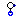
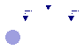
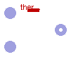
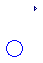
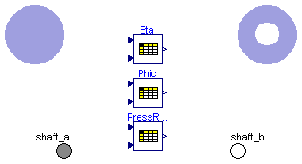
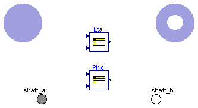
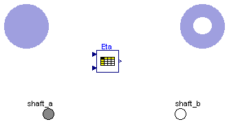
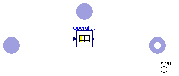
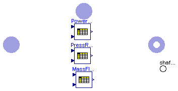

All models with dynamic equations provide initialisation support. Set the initOpt parameter to the appropriate value:
| Name | Description |
|---|---|
| Generic flange connector for gas flows | |
| FlangeA | A-type flange connector for gas flows |
| FlangeB | B-type flange connector for gas flows |
| SourceP | Pressure source for gas flows |
| SinkP | Pressure sink for gas flows |
| SourceW | Flowrate source for gas flows |
| SinkW | Flowrate sink for gas flows |
| ThroughW | Prescribes the flow rate across the component |
| Plenum | Rigid adiabatic volume |
| Header | Header with metal walls for gas flows |
| Mixer | Mixer with metal walls for gas flows |
| FlowJoin | Joins two gas flows |
| FlowSplit | Splits a gas flow in two |
| PressDropLin | Linear pressure drop for gas flows |
| PressDrop | Pressure drop for gas flows |
| SensT | Temperature sensor for gas |
| SensW | Mass Flowrate sensor for gas flows |
|  SensP | Pressure sensor for gas flows |
| Volume Flow Rate sensor for gas flows | |
| ValveLin | Valve for gas flows with linear pressure drop |
| Valve | Valve for gas flow |
| 1-dimensional fluid flow model for gas (finite volumes) | |
| Fanning friction factor for water/steam flows | |
| CombustionChamberBase | Combustion Chamber |
| CombustionChamber | Combustion Chamber |
| CompressorBase | Gas compressor |
| Compressor | Gas compressor |
| TurbineBase | Gas Turbine |
| Turbine | Gas Turbine |
| TurbineStodola | Gas Turbine |
| GTunitBase | Gas Turbine |
| GTunitExhaustBase | Adds computation of exhaust composition to GTunitBase |
| GTunit_ISO | Gas Turbine |
| GTunit | Gas Turbine |
| FanBase | Base model for fans |
| FanMech |
 ThermoPower.Gas.Flange
ThermoPower.Gas.Flange
Can be connected either to a type-A (FlangeA) or to a type B (FlangeB) connector.
| Type | Name | Description |
|---|---|---|
| AbsolutePressure | p | Pressure [Pa] |
| flow MassFlowRate | w | Mass flowrate [kg/s] |
| SpecificEnthalpy | hAB | Enthalpy of fluid flowing from A to B [J/kg] |
| SpecificEnthalpy | hBA | Enthalpy of fluid flowing from B to A [J/kg] |
| MassFraction | XAB[Medium.nXi] | [kg/kg] |
| MassFraction | XBA[Medium.nXi] | [kg/kg] |
connector Flange "Generic flange connector for gas flows" replaceable package Medium = Modelica.Media.Interfaces.PartialMedium; Medium.AbsolutePressure p "Pressure"; flow MassFlowRate w "Mass flowrate"; Medium.SpecificEnthalpy hAB "Enthalpy of fluid flowing from A to B"; Medium.SpecificEnthalpy hBA "Enthalpy of fluid flowing from B to A"; Medium.MassFraction XAB[Medium.nXi]; Medium.MassFraction XBA[Medium.nXi]; end Flange;
Must always be connected to a single type-B connector FlangeB.
| Type | Name | Description |
|---|---|---|
| AbsolutePressure | p | Pressure [Pa] |
| flow MassFlowRate | w | Mass flowrate [kg/s] |
| SpecificEnthalpy | hAB | Specific enthalpy of fluid going out [J/kg] |
| SpecificEnthalpy | hBA | Specific enthalpy of entering fluid [J/kg] |
| MassFraction | XAB[Medium.nXi] | Composition of fluid going out [kg/kg] |
| MassFraction | XBA[Medium.nXi] | Composition of entering fluid [kg/kg] |
connector FlangeA "A-type flange connector for gas flows" replaceable package Medium = Modelica.Media.Interfaces.PartialMedium; Medium.AbsolutePressure p "Pressure"; flow MassFlowRate w "Mass flowrate"; output Medium.SpecificEnthalpy hAB "Specific enthalpy of fluid going out"; input Medium.SpecificEnthalpy hBA "Specific enthalpy of entering fluid"; output Medium.MassFraction XAB[Medium.nXi] "Composition of fluid going out"; input Medium.MassFraction XBA[Medium.nXi] "Composition of entering fluid"; end FlangeA;
Must always be connected to a single type-A connector FlangeA.
| Type | Name | Description |
|---|---|---|
| AbsolutePressure | p | Pressure [Pa] |
| flow MassFlowRate | w | Mass flowrate [kg/s] |
| SpecificEnthalpy | hAB | Specific enthalpy of entering fluid [J/kg] |
| SpecificEnthalpy | hBA | Specific enthalpy of fluid going out [J/kg] |
| MassFraction | XAB[Medium.nXi] | Composition of entering fluid [kg/kg] |
| MassFraction | XBA[Medium.nXi] | Composition of fluid going out [kg/kg] |
connector FlangeB "B-type flange connector for gas flows" replaceable package Medium = Modelica.Media.Interfaces.PartialMedium; Medium.AbsolutePressure p "Pressure"; flow MassFlowRate w "Mass flowrate"; input Medium.SpecificEnthalpy hAB "Specific enthalpy of entering fluid"; output Medium.SpecificEnthalpy hBA "Specific enthalpy of fluid going out"; input Medium.MassFraction XAB[Medium.nXi] "Composition of entering fluid"; output Medium.MassFraction XBA[Medium.nXi] "Composition of fluid going out"; end FlangeB;
Modelling options
The actual gas used in the component is determined by the replaceable Medium package.In the case of multiple componet, variable composition gases, the nominal gas composition is given by Xnom, whose default value is Medium.reference_X .
If R is set to zero, the pressure source is ideal; otherwise, the outlet pressure decreases proportionally to the outgoing flowrate.
If the in_p connector is wired, then the source pressure is given by the corresponding signal, otherwise it is fixed to p0.
If the in_T connector is wired, then the source temperature is given by the corresponding signal, otherwise it is fixed to T.
If the in_X connector is wired, then the source massfraction is given by the corresponding signal, otherwise it is fixed to Xnom.
| Type | Name | Default | Description |
|---|---|---|---|
| Pressure | p0 | 101325 | Nominal pressure [Pa] |
| HydraulicResistance | R | 0 | Hydraulic resistance [Pa/(kg/s)] |
| AbsoluteTemperature | T | 300 | Nominal temperature [K] |
| MassFraction | Xnom[Medium.nX] | Medium.reference_X | Nominal gas composition [1] |
| Type | Name | Description |
|---|---|---|
| FlangeB | flange | |
| input RealInput | in_p | |
| input RealInput | in_T | |
| input RealInput | in_X[Medium.nX] |
model SourceP "Pressure source for gas flows"
extends Icons.Gas.SourceP;
replaceable package Medium = Modelica.Media.Interfaces.PartialMedium;
Medium.BaseProperties gas(p(start=p0),T(start=T),Xi(start=Xnom[1:Medium.nXi]));
parameter Pressure p0=101325 "Nominal pressure";
parameter HydraulicResistance R=0 "Hydraulic resistance";
parameter AbsoluteTemperature T=300 "Nominal temperature";
parameter MassFraction Xnom[Medium.nX]=Medium.reference_X
"Nominal gas composition";
FlangeB flange(redeclare package Medium=Medium);
Modelica.Blocks.Interfaces.RealInput in_p;
Modelica.Blocks.Interfaces.RealInput in_T;
Modelica.Blocks.Interfaces.RealInput in_X[Medium.nX];
equation
if R == 0 then
flange.p = gas.p;
else
flange.p = gas.p + flange.w*R;
end if;
gas.p = in_p;
if cardinality(in_p)==0 then
in_p = p0 "Pressure set by parameter";
end if;
gas.T = in_T;
if cardinality(in_T)==0 then
in_T = T "Temperature set by parameter";
end if;
gas.Xi = in_X[1:Medium.nXi];
if cardinality(in_X)==0 then
in_X = Xnom "Composition set by parameter";
end if;
flange.hBA = gas.h;
flange.XBA = gas.Xi;
end SourceP;
 ThermoPower.Gas.SinkP
ThermoPower.Gas.SinkP
Modelling options
The actual gas used in the component is determined by the replaceable Medium package. In the case of multiple component, variable composition gases, the nominal gas composition is given by Xnom, whose default value is Medium.reference_X .
If R is set to zero, the pressure sink is ideal; otherwise, the inlet pressure increases proportionally to the outgoing flowrate.
If the in_p connector is wired, then the source pressure is given by the corresponding signal, otherwise it is fixed to p0.
If the in_T connector is wired, then the source temperature is given by the corresponding signal, otherwise it is fixed to T.
If the in_X connector is wired, then the source massfraction is given by the corresponding signal, otherwise it is fixed to Xnom.
| Type | Name | Default | Description |
|---|---|---|---|
| Pressure | p0 | 101325 | Nominal pressure [Pa] |
| AbsoluteTemperature | T | 300 | Nominal temperature [K] |
| MassFraction | Xnom[Medium.nX] | Medium.reference_X | Nominal gas composition [1] |
| HydraulicResistance | R | 0 | Hydraulic Resistance [Pa/(kg/s)] |
| Type | Name | Description |
|---|---|---|
| FlangeA | flange | |
| input RealInput | in_p | |
| input RealInput | in_T | |
| input RealInput | in_X[Medium.nX] |
model SinkP "Pressure sink for gas flows"
extends Icons.Gas.SourceP;
replaceable package Medium = Modelica.Media.Interfaces.PartialMedium;
Medium.BaseProperties gas(p(start=p0),T(start=T),Xi(start=Xnom[1:Medium.nXi]));
parameter Pressure p0=101325 "Nominal pressure";
parameter AbsoluteTemperature T=300 "Nominal temperature";
parameter MassFraction Xnom[Medium.nX]=Medium.reference_X
"Nominal gas composition";
parameter HydraulicResistance R=0 "Hydraulic Resistance";
FlangeA flange(redeclare package Medium=Medium);
Modelica.Blocks.Interfaces.RealInput in_p;
Modelica.Blocks.Interfaces.RealInput in_T;
Modelica.Blocks.Interfaces.RealInput in_X[Medium.nX];
equation
if R == 0 then
flange.p = gas.p;
else
flange.p = gas.p + flange.w*R;
end if;
gas.p = in_p;
if cardinality(in_p)==0 then
in_p = p0 "Pressure set by parameter";
end if;
gas.T = in_T;
if cardinality(in_T)==0 then
in_T =T "Temperature set by parameter";
end if;
gas.Xi = in_X[1:Medium.nXi];
if cardinality(in_X)==0 then
in_X = Xnom "Composition set by parameter";
end if;
flange.hAB = gas.h;
flange.XAB = gas.Xi;
end SinkP;
Modelling options
The actual gas used in the component is determined by the replaceable Medium package. In the case of multiple component, variable composition gases, the nominal gas composition is given by Xnom,whose default value is Medium.reference_X .
If G is set to zero, the flowrate source is ideal; otherwise, the outgoing flowrate decreases proportionally to the outlet pressure.
If the in_w0 connector is wired, then the source massflowrate is given by the corresponding signal, otherwise it is fixed to w0.
If the in_T connector is wired, then the source temperature is given by the corresponding signal, otherwise it is fixed to T.
If the in_X connector is wired, then the source massfraction is given by the corresponding signal, otherwise it is fixed to Xnom.
| Type | Name | Default | Description |
|---|---|---|---|
| Pressure | p0 | 101325 | Nominal pressure [Pa] |
| AbsoluteTemperature | T | 300 | Nominal temperature [K] |
| MassFraction | Xnom[Medium.nX] | Medium.reference_X | Nominal gas composition [1] |
| MassFlowRate | w0 | 0 | Nominal mass flowrate [kg/s] |
| HydraulicConductance | G | 0 | HydraulicConductance [(kg/s)/Pa] |
| Type | Name | Description |
|---|---|---|
| FlangeB | flange | |
| input RealInput | in_w0 | |
| input RealInput | in_T | |
| input RealInput | in_X[Medium.nX] |
model SourceW "Flowrate source for gas flows"
extends Icons.Gas.SourceW;
replaceable package Medium = Modelica.Media.Interfaces.PartialMedium;
Medium.BaseProperties gas(p(start=p0),T(start=T),Xi(start=Xnom[1:Medium.nXi]));
parameter Pressure p0=101325 "Nominal pressure";
parameter AbsoluteTemperature T=300 "Nominal temperature";
parameter MassFraction Xnom[Medium.nX]=Medium.reference_X
"Nominal gas composition";
parameter MassFlowRate w0=0 "Nominal mass flowrate";
parameter HydraulicConductance G=0 "HydraulicConductance";
MassFlowRate w;
FlangeB flange(redeclare package Medium=Medium);
Modelica.Blocks.Interfaces.RealInput in_w0;
Modelica.Blocks.Interfaces.RealInput in_T;
Modelica.Blocks.Interfaces.RealInput in_X[Medium.nX];
equation
if G == 0 then
flange.w = -w;
else
flange.w = -w + (flange.p - p0)*G;
end if;
w = in_w0;
if cardinality(in_w0)==0 then
in_w0 = w0 "Flow rate set by parameter";
end if;
gas.T = in_T;
if cardinality(in_T)==0 then
in_T = T "Temperature set by parameter";
end if;
gas.Xi = in_X[1:Medium.nXi];
if cardinality(in_X)==0 then
in_X = Xnom "Composition set by parameter";
end if;
flange.p = gas.p;
flange.hBA = gas.h;
flange.XBA = gas.Xi;
end SourceW;
 ThermoPower.Gas.SinkW
ThermoPower.Gas.SinkW
The actual gas used in the component is determined by the replaceable GasModel model. In the case of multiple component, variable composition gases, the nominal gas composition is given by Xnom, whose default value is Medium.reference_X .
If G is set to zero, the flowrate source is ideal; otherwise, the incoming flowrate increases proportionally to the outlet pressure.
If the in_w0 connector is wired, then the source massflowrate is given by the corresponding signal, otherwise it is fixed to w0.
If the in_T connector is wired, then the source temperature is given by the corresponding signal, otherwise it is fixed to T.
If the in_X connector is wired, then the source massfraction is given by the corresponding signal, otherwise it is fixed to Xnom.
| Type | Name | Default | Description |
|---|---|---|---|
| Pressure | p0 | 101325 | Nominal pressure [Pa] |
| AbsoluteTemperature | T | 300 | Nominal Temperature [K] |
| MassFraction | Xnom[Medium.nX] | Medium.reference_X | Nominal gas composition [1] |
| MassFlowRate | w0 | 0 | Nominal mass flowrate [kg/s] |
| HydraulicConductance | G | 0 | Hydraulic Conductance [(kg/s)/Pa] |
| Type | Name | Description |
|---|---|---|
| input RealInput | in_w0 | |
| input RealInput | in_T | |
| input RealInput | in_X[Medium.nX] | |
| FlangeA | flange |
model SinkW "Flowrate sink for gas flows"
extends Icons.Gas.SourceW;
replaceable package Medium=Modelica.Media.Interfaces.PartialMedium;
Medium.BaseProperties gas(p(start=p0),T(start=T),Xi(start=Xnom[1:Medium.nXi]));
parameter Pressure p0=101325 "Nominal pressure";
parameter AbsoluteTemperature T=300 "Nominal Temperature";
parameter MassFraction Xnom[Medium.nX]=Medium.reference_X
"Nominal gas composition";
parameter MassFlowRate w0=0 "Nominal mass flowrate";
parameter HydraulicConductance G=0 "Hydraulic Conductance";
MassFlowRate w;
Modelica.Blocks.Interfaces.RealInput in_w0;
Modelica.Blocks.Interfaces.RealInput in_T;
Modelica.Blocks.Interfaces.RealInput in_X[Medium.nX];
FlangeA flange(redeclare package Medium=Medium);
equation
if G == 0 then
flange.w = w;
else
flange.w = w + (flange.p - p0)*G;
end if;
w = in_w0;
if cardinality(in_w0)==0 then
in_w0 = w0 "Flow rate set by parameter";
end if;
gas.T = in_T;
if cardinality(in_T)==0 then
in_T = T "Temperature set by parameter";
end if;
gas.Xi = in_X[1:Medium.nXi];
if cardinality(in_X)==0 then
in_X = Xnom "Composition set by parameter";
end if;
flange.p = gas.p;
flange.hAB = gas.h;
flange.XAB = gas.Xi;
end SinkW;
Modelling options
The actual gas used in the component is determined by the replaceable Medium package. In the case of multiple component, variable composition gases, the nominal gas composition is given by Xnom,whose default value is Medium.reference_X .
If G is set to zero, the flowrate source is ideal; otherwise, the outgoing flowrate decreases proportionally to the outlet pressure.
If the in_w0 connector is wired, then the source massflowrate is given by the corresponding signal, otherwise it is fixed to w0.
If the in_T connector is wired, then the source temperature is given by the corresponding signal, otherwise it is fixed to T.
If the in_X connector is wired, then the source massfraction is given by the corresponding signal, otherwise it is fixed to Xnom.
| Type | Name | Default | Description |
|---|---|---|---|
| MassFlowRate | w0 | 0 | Nominal mass flowrate [kg/s] |
| Type | Name | Description |
|---|---|---|
| FlangeA | inlet | |
| FlangeB | outlet | |
| input RealInput | in_w0 |
model ThroughW "Prescribes the flow rate across the component"
extends Icons.Gas.SourceW;
replaceable package Medium = Modelica.Media.Interfaces.PartialMedium;
parameter MassFlowRate w0=0 "Nominal mass flowrate";
FlangeA inlet(redeclare package Medium = Medium);
FlangeB outlet(redeclare package Medium=Medium);
Modelica.Blocks.Interfaces.RealInput in_w0;
MassFlowRate w "Mass flow rate";
equation
inlet.w + outlet.w = 0 "Mass balance";
inlet.w = w "Flow characteristics";
w = in_w0;
if cardinality(in_w0) == 0 then
in_w0 = w0 "Flow rate set by parameter";
end if;
// Energy and partial mass balance
inlet.hAB = outlet.hAB;
inlet.hBA = outlet.hBA;
inlet.XAB = outlet.XAB;
inlet.XBA = outlet.XBA;
end ThroughW;
This model describes a rigid, adiabatic control volume.
Modelling options
The actual gas used in the component is determined by the replaceable Medium package. In the case of multiple component, variable composition gases, the start composition is given by Xstart, whose default value is Medium.reference_X .
| Type | Name | Default | Description |
|---|---|---|---|
| Volume | V | Inner volume [m3] | |
| HT | thermalPort | redeclare Thermal.HT thermal... | |
| Initialisation | |||
| Pressure | pstart | 101325 | Pressure start value [Pa] |
| AbsoluteTemperature | Tstart | 300 | Temperature start value [K] |
| MassFraction | Xstart[Medium.nX] | Medium.reference_X | Start gas composition [1] |
| Temp | initOpt | Choices.Init.Options.noInit | Initialisation option |
| Type | Name | Description |
|---|---|---|
| FlangeA | inlet | |
| FlangeB | outlet | |
| HT | thermalPort |
model Plenum "Rigid adiabatic volume"
extends Icons.Gas.Mixer;
replaceable package Medium = Modelica.Media.Interfaces.PartialMedium;
Medium.BaseProperties gas(
p(start=pstart, stateSelect=StateSelect.prefer),
T(start=Tstart, stateSelect=StateSelect.prefer),
Xi(start=Xstart[1:Medium.nXi], stateSelect=StateSelect.prefer));
parameter Volume V "Inner volume";
parameter Pressure pstart=101325 "Pressure start value";
parameter AbsoluteTemperature Tstart=300 "Temperature start value";
parameter MassFraction Xstart[Medium.nX]=Medium.reference_X
"Start gas composition";
parameter Choices.Init.Options.Temp initOpt=Choices.Init.Options.noInit
"Initialisation option";
Mass M "Total mass";
InternalEnergy E "Total internal energy";
Medium.SpecificEnthalpy hi "Inlet specific enthalpy";
Medium.SpecificEnthalpy ho "Outlet specific enthalpy";
Medium.MassFraction Xi_i[Medium.nXi] "Inlet composition";
Medium.MassFraction Xi_o[Medium.nXi] "Outlet composition";
Time Tr "Residence Time";
FlangeA inlet(redeclare package Medium = Medium);
FlangeB outlet(redeclare package Medium = Medium);
replaceable Thermal.HT thermalPort;
equation
M = gas.d*V "Gas mass";
E = M*gas.u "Gas internal energy";
der(M) = inlet.w + outlet.w "Mass balance";
der(E) = inlet.w*hi + outlet.w*ho + thermalPort.Q_flow "Energy balance";
for j in 1:Medium.nXi loop
M*der(gas.Xi[j]) = inlet.w*(Xi_i[j] - gas.Xi[j]) + outlet.w*(Xi_o[j] - gas.Xi[j])
"Independent component mass balance";
end for;
// Boundary conditions
if inlet.w >= 0 then
hi = inlet.hBA;
Xi_i = inlet.XBA;
else
hi = gas.h;
Xi_i = gas.Xi;
end if;
if outlet.w >= 0 then
ho = outlet.hAB;
Xi_o = outlet.XAB;
else
ho = gas.h;
Xi_o = gas.Xi;
end if;
inlet.hAB = gas.h;
inlet.XAB = gas.Xi;
outlet.hBA = gas.h;
outlet.XBA = gas.Xi;
inlet.p = gas.p;
outlet.p = gas.p;
thermalPort.T = gas.T;
Tr=noEvent(M/max(abs(outlet.w),Modelica.Constants.eps)) "Residence time";
initial equation
// Initial conditions
if initOpt == Choices.Init.Options.noInit then
// do nothing
elseif initOpt == Choices.Init.Options.steadyState then
der(gas.p) = 0;
der(gas.T) = 0;
der(gas.Xi)=zeros(Medium.nXi);
elseif initOpt == Choices.Init.Options.steadyStateNoP then
der(gas.T) = 0;
der(gas.Xi)=zeros(Medium.nXi);
else
assert(false, "Unsupported initialisation option");
end if;
end Plenum;
This model describes a constant volume buffer with metal walls. The metal wall temperature and the heat transfer coefficient between the wall and the fluid are uniform. The wall is thermally insulated from the outside.
If the inlet or the outlet are connected to a bank of tubes, the model can actually represent a collector or a distributor.
Modelling options
The actual gas used in the component is determined by the replaceable Medium package. In the case of multiple component, variable composition gases, the start composition is given by Xstart, whose default value is Medium.reference_X .
| Type | Name | Default | Description |
|---|---|---|---|
| AbsoluteTemperature | Tmstart | 300 | Metal wall start temperature [K] |
| Volume | V | Inner volume [m3] | |
| Area | S | 0 | Inner surface [m2] |
| CoefficientOfHeatTransfer | gamma | 0 | Heat Transfer Coefficient [W/(m2.K)] |
| HeatCapacity | Cm | 0 | Metal Heat Capacity [J/K] |
| HT | thermalPort | redeclare Thermal.HT thermal... | |
| Initialisation | |||
| Pressure | pstart | 101325 | Pressure start value [Pa] |
| AbsoluteTemperature | Tstart | 300 | Temperature start value [K] |
| MassFraction | Xstart[Medium.nX] | Medium.reference_X | Start gas composition [1] |
| Temp | initOpt | Choices.Init.Options.noInit | Initialisation option |
| Type | Name | Description |
|---|---|---|
| FlangeA | inlet | |
| FlangeB | outlet | |
| HT | thermalPort |
model Header "Header with metal walls for gas flows"
extends Icons.Gas.Mixer;
replaceable package Medium = Modelica.Media.Interfaces.PartialMedium;
Medium.BaseProperties gas(
p(start=pstart, stateSelect=StateSelect.prefer),
T(start=Tstart, stateSelect=StateSelect.prefer),
Xi(start=Xstart[1:Medium.nXi], stateSelect=StateSelect.prefer));
parameter AbsoluteTemperature Tmstart=300 "Metal wall start temperature";
parameter Volume V "Inner volume";
parameter Area S=0 "Inner surface";
parameter CoefficientOfHeatTransfer gamma=0 "Heat Transfer Coefficient";
parameter HeatCapacity Cm=0 "Metal Heat Capacity";
parameter Pressure pstart=101325 "Pressure start value";
parameter AbsoluteTemperature Tstart=300 "Temperature start value";
parameter MassFraction Xstart[Medium.nX]=Medium.reference_X
"Start gas composition";
parameter Choices.Init.Options.Temp initOpt=Choices.Init.Options.noInit
"Initialisation option";
Mass M "Gas total mass";
InternalEnergy E "Gas total energy";
Medium.SpecificEnthalpy hi "Inlet specific enthalpy";
Medium.SpecificEnthalpy ho "Outlet specific enthalpy";
Medium.MassFraction Xi_i[Medium.nX] "Inlet composition";
Medium.MassFraction Xi_o[Medium.nX] "Outlet composition";
AbsoluteTemperature Tm(start=Tmstart) "Wall temperature";
Time Tr "Residence Time";
FlangeA inlet(redeclare package Medium = Medium);
FlangeB outlet(redeclare package Medium = Medium);
replaceable Thermal.HT thermalPort;
equation
M = gas.d*V "Gas mass";
E = gas.u*M "Gas internal energy";
der(M) = inlet.w + outlet.w "Mass balance";
der(E) = inlet.w*hi + outlet.w*ho - gamma*S*(gas.T - Tm)
+ thermalPort.Q_flow "Energy balance";
for j in 1:Medium.nXi loop
M*der(gas.Xi[j]) = inlet.w*(Xi_i[j] - gas.Xi[j]) + outlet.w*(Xi_o[j] - gas.Xi[j])
"Independent component mass balance";
end for;
if Cm > 0 and gamma > 0 then
Cm*der(Tm) = gamma*S*(gas.T - Tm) "Metal wall energy balance";
else
Tm = gas.T;
end if;
// Boundary conditions
if inlet.w >= 0 then
hi = inlet.hBA;
Xi_i = inlet.XBA;
else
hi = gas.h;
Xi_i = gas.Xi;
end if;
if outlet.w >= 0 then
ho = outlet.hAB;
Xi_o = outlet.XAB;
else
ho = gas.h;
Xi_o = gas.Xi;
end if;
inlet.p = gas.p;
inlet.hAB = gas.h;
inlet.XAB = gas.Xi;
outlet.p = gas.p;
outlet.hBA = gas.h;
outlet.XBA = gas.Xi;
thermalPort.T = gas.T;
Tr=noEvent(M/max(abs(outlet.w),Modelica.Constants.eps)) "Residence time";
initial equation
// Initial conditions
if initOpt == Choices.Init.Options.noInit then
// do nothing
elseif initOpt == Choices.Init.Options.steadyState then
der(gas.p) = 0;
der(gas.T) = 0;
der(gas.Xi)=zeros(Medium.nXi);
if (Cm > 0 and gamma >0) then
der(Tm) = 0;
end if;
elseif initOpt == Choices.Init.Options.steadyStateNoP then
der(gas.T) = 0;
der(gas.Xi)=zeros(Medium.nXi);
if (Cm > 0 and gamma >0) then
der(Tm) = 0;
end if;
else
assert(false, "Unsupported initialisation option");
end if;
end Header;

This model describes a constant volume mixer with metal walls. The metal wall temperature and the heat transfer coefficient between the wall and the fluid are uniform. The wall is thermally insulated from the outside.
Modelling options
The actual gas used in the component is determined by the replaceable Medium package. In the case of multiple component, variable composition gases, the start composition is given by Xstart, whose default value is Medium.reference_X.
| Type | Name | Default | Description |
|---|---|---|---|
| Volume | V | Inner volume [m3] | |
| Area | S | 0 | Inner surface [m2] |
| CoefficientOfHeatTransfer | gamma | 0 | Heat Transfer Coefficient [W/(m2.K)] |
| HeatCapacity | Cm | 0 | Metal heat capacity [J/K] |
| HT | thermalPort | redeclare Thermal.HT thermal... | |
| Initialisation | |||
| Pressure | pstart | 101325 | Pressure start value [Pa] |
| AbsoluteTemperature | Tstart | 300 | Temperature start value [K] |
| MassFraction | Xstart[Medium.nX] | Medium.reference_X | Start gas composition [1] |
| Temperature | Tmstart | 300 | Metal wall start temperature [K] |
| Temp | initOpt | Choices.Init.Options.noInit | Initialisation option |
| Type | Name | Description |
|---|---|---|
| FlangeA | in1 | |
| FlangeB | out | |
| FlangeA | in2 | |
| HT | thermalPort |
model Mixer "Mixer with metal walls for gas flows"
extends Icons.Gas.Mixer;
replaceable package Medium = Modelica.Media.Interfaces.PartialMedium;
Medium.BaseProperties gas(
p(start=pstart, stateSelect=StateSelect.prefer),
T(start=Tstart, stateSelect=StateSelect.prefer),
Xi(start=Xstart[1:Medium.nXi], stateSelect=StateSelect.prefer));
parameter Volume V "Inner volume";
parameter Area S=0 "Inner surface";
parameter CoefficientOfHeatTransfer gamma=0 "Heat Transfer Coefficient";
parameter HeatCapacity Cm=0 "Metal heat capacity";
parameter Pressure pstart=101325 "Pressure start value";
parameter AbsoluteTemperature Tstart=300 "Temperature start value";
parameter MassFraction Xstart[Medium.nX]=Medium.reference_X
"Start gas composition";
parameter Temperature Tmstart=300 "Metal wall start temperature";
parameter Choices.Init.Options.Temp initOpt=Choices.Init.Options.noInit
"Initialisation option";
Mass M "Gas total mass";
InternalEnergy E "Gas total energy";
AbsoluteTemperature Tm(start=Tmstart) "Wall temperature";
Medium.SpecificEnthalpy hi1 "Inlet 1 specific enthalpy";
Medium.SpecificEnthalpy hi2 "Inlet 2 specific enthalpy";
Medium.SpecificEnthalpy ho "Outlet specific enthalpy";
Medium.MassFraction Xi1[Medium.nX] "Inlet 1 composition";
Medium.MassFraction Xi2[Medium.nX] "Inlet 2 composition";
Medium.MassFraction Xo[Medium.nX] "Outlet composition";
Time Tr "Residence time";
FlangeA in1(redeclare package Medium = Medium);
FlangeB out(redeclare package Medium = Medium);
FlangeA in2(redeclare package Medium = Medium);
replaceable Thermal.HT thermalPort;
equation
M = gas.d*V "Gas mass";
E = M*gas.u "Gas internal energy";
der(M) = in1.w + in2.w + out.w "Mass balance";
der(E) = in1.w*hi1 + in2.w*hi2 + out.w*ho - gamma*S*(gas.T - Tm)
+ thermalPort.Q_flow "Energy balance";
for j in 1:Medium.nX loop
M*der(gas.X[j]) = in1.w*(Xi1[j] - gas.X[j]) + in2.w*(Xi2[j] - gas.X[j])
+ out.w*(Xo[j] - gas.X[j]) "Independent component mass balance";
end for;
if Cm > 0 and gamma > 0 then
Cm*der(Tm) = gamma*S*(gas.T - Tm) "Metal wall energy balance";
else
Tm = gas.T;
end if;
// Boundary conditions
if in1.w >= 0 then
hi1 = in1.hBA;
Xi1 = in1.XBA;
else
hi1 = gas.h;
Xi1 = gas.X;
end if;
if in2.w >= 0 then
hi2 = in2.hBA;
Xi2 = in2.XBA;
else
hi2 = gas.h;
Xi2 = gas.X;
end if;
if out.w >= 0 then
ho = out.hAB;
Xo = out.XAB;
else
ho = gas.h;
Xo = gas.X;
end if;
in1.p = gas.p;
in1.hAB = gas.h;
in1.XAB = gas.X;
in2.p = gas.p;
in2.hAB = gas.h;
in2.XAB = gas.X;
out.p = gas.p;
out.hBA = gas.h;
out.XBA = gas.X;
thermalPort.T = gas.T;
Tr=noEvent(M/max(abs(out.w),Modelica.Constants.eps)) "Residence time";
initial equation
// Initial conditions
if initOpt == Choices.Init.Options.noInit then
// do nothing
elseif initOpt == Choices.Init.Options.steadyState then
der(gas.p) = 0;
der(gas.T) = 0;
der(gas.Xi)=zeros(Medium.nXi);
if (Cm > 0 and gamma >0) then
der(Tm) = 0;
end if;
elseif initOpt == Choices.Init.Options.steadyStateNoP then
der(gas.T) = 0;
der(gas.Xi)=zeros(Medium.nXi);
if (Cm > 0 and gamma >0) then
der(Tm) = 0;
end if;
else
assert(false, "Unsupported initialisation option");
end if;
end Mixer;
This component allows to join two separate flows into one. The model is based on mass and energy balance equations, without any mass or energy buildup, and without any pressure drop between the inlet and the outlets.
Modelling options
If rev_inlet1, rev_inlet2 or rev_outlet is true, the respective flows reversal is allowed. If at least ona among these parameters is false, it is possible to set checkFlowDirection.
If checkFlowDirection is true, when the flow reversal happen where it is not allowed, the error message is showed.
| Type | Name | Default | Description |
|---|---|---|---|
| Boolean | rev_inlet1 | true | Allow flow reversal at inlet1 |
| Boolean | rev_inlet2 | true | Allow flow reversal at inlet2 |
| Boolean | rev_outlet | true | Allow flow reversal at outlet |
| Boolean | checkFlowDirection | false | Check flow direction |
| Type | Name | Description |
|---|---|---|
| FlangeA | inlet1 | |
| FlangeA | inlet2 | |
| FlangeB | outlet |
model FlowJoin "Joins two gas flows"
extends Icons.Gas.FlowJoin;
replaceable package Medium = Modelica.Media.Interfaces.PartialMedium;
constant MassFlowRate wzero=1e-9
"Small flowrate to avoid singularity in computing the outlet enthalpy and composition";
parameter Boolean rev_inlet1 = true "Allow flow reversal at inlet1";
parameter Boolean rev_inlet2 = true "Allow flow reversal at inlet2";
parameter Boolean rev_outlet = true "Allow flow reversal at outlet";
parameter Boolean checkFlowDirection = false "Check flow direction";
FlangeA inlet1(redeclare package Medium = Medium);
FlangeA inlet2(redeclare package Medium = Medium);
FlangeB outlet(redeclare package Medium = Medium);
equation
inlet1.w + inlet2.w + outlet.w = 0 "Mass balance";
// Momentum balance
inlet1.p = outlet.p;
inlet2.p = outlet.p;
// Energy balance
outlet.hBA = if (inlet2.w < 0 and rev_inlet2) then inlet1.hBA else if (inlet1.w < 0 and rev_inlet1) then inlet2.hBA else (
inlet1.hBA*(inlet1.w + wzero) + inlet2.hBA*(inlet2.w + wzero))/(inlet1.w + 2*wzero + inlet2.w);
inlet1.hAB = if (inlet2.w < 0 and rev_inlet2) then outlet.hAB else if (outlet.w < 0 or not rev_outlet) then inlet2.hBA else (
outlet.hAB*(outlet.w + wzero) + inlet2.hBA*(inlet2.w + wzero))/(outlet.w + 2*wzero + inlet2.w);
inlet2.hAB = if (inlet1.w < 0 and rev_inlet1) then outlet.hAB else if (outlet.w < 0 or not rev_outlet) then inlet1.hBA else (
outlet.hAB*(outlet.w + wzero) + inlet1.hBA*(inlet1.w + wzero))/(outlet.w + 2*wzero + inlet1.w);
// Independent component mass balances
outlet.XBA = if (inlet2.w < 0 and rev_inlet2) then inlet1.XBA else if (inlet1.w < 0 and rev_inlet1) then inlet2.XBA else (
inlet1.XBA*(inlet1.w + wzero) + inlet2.XBA*(inlet2.w + wzero))/(inlet1.w + 2*wzero + inlet2.w);
inlet1.XAB = if (inlet2.w < 0 and rev_inlet2) then outlet.XAB else if (outlet.w < 0 or not rev_outlet) then inlet2.XBA else (
outlet.XAB*(outlet.w + wzero) + inlet2.XBA*(inlet2.w + wzero))/(outlet.w + 2*wzero + inlet2.w);
inlet2.XAB = if (inlet1.w < 0 and rev_inlet1) then outlet.XAB else if (outlet.w < 0 or not rev_outlet) then inlet1.XBA else (
outlet.XAB*(outlet.w + wzero) + inlet1.XBA*(inlet1.w + wzero))/(outlet.w + 2*wzero + inlet1.w);
//Check flow direction
assert( not checkFlowDirection or ((rev_inlet1 or inlet1.w >= 0) and
(rev_inlet2 or inlet2.w >= 0) and
(rev_outlet or outlet.w <= 0)),
"Flow reversal not supported");
end FlowJoin;
This component allows to split a single flow in two ones. The model is based on mass and energy balance equations, without any mass or energy buildup, and without any pressure drop between the inlet and the outlets.
Modelling options
If rev_inlet, rev_outlet1 or rev_outlet2 is true, the respective flows reversal is allowed. If at least ona among these parameters is false, it is possible to set checkFlowDirection.
If checkFlowDirection is true, when the flow reversal happen where it is not allowed, the error message is showed.
| Type | Name | Default | Description |
|---|---|---|---|
| Boolean | rev_inlet | true | Allow flow reversal at inlet |
| Boolean | rev_outlet1 | true | Allow flow reversal at outlet1 |
| Boolean | rev_outlet2 | true | Allow flow reversal at outlet2 |
| Boolean | checkFlowDirection | false | Check flow direction |
| Type | Name | Description |
|---|---|---|
| FlangeA | inlet | |
| FlangeB | outlet1 | |
| FlangeB | outlet2 |
model FlowSplit "Splits a gas flow in two"
extends Icons.Gas.FlowSplit;
replaceable package Medium = Modelica.Media.Interfaces.PartialMedium;
constant MassFlowRate wzero=1e-9
"Small flowrate to avoid singularity in computing the outlet enthalpy and composition";
parameter Boolean rev_inlet = true "Allow flow reversal at inlet";
parameter Boolean rev_outlet1 = true "Allow flow reversal at outlet1";
parameter Boolean rev_outlet2 = true "Allow flow reversal at outlet2";
parameter Boolean checkFlowDirection = false "Check flow direction";
FlangeA inlet(redeclare package Medium = Medium);
FlangeB outlet1(redeclare package Medium = Medium);
FlangeB outlet2(redeclare package Medium = Medium);
equation
inlet.w+outlet1.w+outlet2.w=0 "Mass balance";
// Momentum balance
outlet1.p=inlet.p;
outlet2.p=inlet.p;
// Energy balance
outlet1.hBA= if (inlet.w<0 and rev_inlet) then outlet2.hAB else if (outlet2.w<0 or not rev_outlet2) then inlet.hBA else
(inlet.hBA*(inlet.w+wzero)+outlet2.hAB*(outlet2.w+wzero))/(inlet.w+2*wzero+outlet2.w);
outlet2.hBA= if (inlet.w<0 and rev_inlet) then outlet1.hAB else if (outlet1.w<0 or not rev_outlet1) then inlet.hBA else
(inlet.hBA*(inlet.w+wzero)+outlet1.hAB*(outlet1.w+wzero))/(inlet.w+2*wzero+outlet1.w);
inlet.hAB= if (outlet1.w<0 or not rev_outlet1) then outlet2.hAB else if (outlet2.w<0 or not rev_outlet2) then outlet1.hAB else
(outlet1.hAB*(outlet1.w+wzero)+outlet2.hAB*(outlet2.w+wzero))/(outlet1.w+2*wzero+outlet2.w);
// Independent component mass balances
outlet1.XBA= if (inlet.w<0 and rev_inlet) then outlet2.XAB else if (outlet2.w<0 or not rev_outlet2) then inlet.XBA else
(inlet.XBA*(inlet.w+wzero)+outlet2.XAB*(outlet2.w+wzero))/(inlet.w+2*wzero+outlet2.w);
outlet2.XBA= if (inlet.w<0 and rev_inlet) then outlet1.XAB else if (outlet1.w<0 or not rev_outlet1) then inlet.XBA else
(inlet.XBA*(inlet.w+wzero)+outlet1.XAB*(outlet1.w+wzero))/(inlet.w+2*wzero+outlet1.w);
inlet.XAB= if (outlet1.w<0 or not rev_outlet1) then outlet2.XAB else if (outlet2.w<0 or not rev_outlet2) then outlet1.XAB else
(outlet1.XAB*(outlet1.w+wzero)+outlet2.XAB*(outlet2.w+wzero))/(outlet1.w+2*wzero+outlet2.w);
//Check flow direction
assert( not checkFlowDirection or ((rev_inlet or inlet.w >= 0) and
(rev_outlet1 or outlet1.w <= 0) and
(rev_outlet2 or outlet2.w <= 0)),
"Flow reversal not supported");
end FlowSplit;
This very simple model provides a pressure drop which is proportional to the flowrate, without computing any fluid property.
| Type | Name | Default | Description |
|---|---|---|---|
| HydraulicResistance | R | Hydraulic resistance [Pa/(kg/s)] |
| Type | Name | Description |
|---|---|---|
| FlangeA | inlet | |
| FlangeB | outlet |
model PressDropLin "Linear pressure drop for gas flows" extends Icons.Gas.Tube; replaceable package Medium = Modelica.Media.Interfaces.PartialMedium; parameter HydraulicResistance R "Hydraulic resistance"; FlangeA inlet(redeclare package Medium = Medium); FlangeB outlet(redeclare package Medium = Medium); equation inlet.w + outlet.w = 0 "Mass balance"; inlet.p - outlet.p = R*inlet.w "Flow characteristics"; // Boundary conditions inlet.hAB = outlet.hAB; inlet.XAB = outlet.XAB; inlet.hBA = outlet.hBA; inlet.XBA = outlet.XBA; end PressDropLin;
The pressure drop across the inlet and outlet connectors is computed according to a turbulent friction model, i.e. is proportional to the squared velocity of the fluid. The friction coefficient can be specified directly, or by giving an operating point, or as a multiple of the kinetic pressure. The correction coefficient Kfc can be used to modify the friction coefficient, e.g. to fit some experimental operating point.
A small linear pressure drop is added to avoid numerical singularities at low or zero flowrate. The wnom parameter must be always specified; the additional linear pressure drop is such that it is equal to the turbulent pressure drop when the flowrate is equal to wnf*wnom (the default value is 1% of the nominal flowrate).
Modelling options
The actual gas used in the component is determined by the replaceable Medium package. In the case of multiple component, variable composition gases, the start composition is given by Xstart, whose default value is Medium.reference_X.
The following options are available to specify the friction coefficient:
| Type | Name | Default | Description |
|---|---|---|---|
| MassFlowRate | wnom | Nominal mass flowrate [kg/s] | |
| Temp | FFtype | FFtypes.Kf | Friction factor type |
| Real | Kf | 0 | Hydraulic resistance coefficient [Pa.kg/m^3/(kg/s)^2] |
| Pressure | dpnom | 0 | Nominal pressure drop [Pa] |
| Density | rhonom | 0 | Nominal density [kg/m3] |
| Real | K | 0 | Kinetic resistance coefficient (DP=K*rho*velocity^2/2) |
| Area | A | 0 | Cross-section [m2] |
| Real | wnf | 0.01 | Fraction of nominal flow rate at which linear friction equals turbulent friction |
| Real | Kfc | 1 | Friction factor correction coefficient |
| Initialisation | |||
| Pressure | pstart | 101325 | Start pressure value [Pa] |
| AbsoluteTemperature | Tstart | 300 | Start temperature value [K] |
| MassFraction | Xstart[Medium.nX] | Medium.reference_X | Start gas composition [1] |
| Type | Name | Description |
|---|---|---|
| FlangeA | inlet | |
| FlangeB | outlet |
model PressDrop "Pressure drop for gas flows"
extends Icons.Gas.Tube;
import ThermoPower.Choices.PressDrop.FFtypes;
replaceable package Medium=Modelica.Media.Interfaces.PartialMedium;
Medium.BaseProperties gas(
p(start=pstart), T(start=Tstart),
Xi(start=Xstart[1:Medium.nXi]));
parameter MassFlowRate wnom "Nominal mass flowrate";
parameter FFtypes.Temp FFtype = FFtypes.Kf "Friction factor type";
parameter Real Kf(fixed = if FFtype == FFtypes.Kf then true else false,
unit = "Pa.kg/m^3/(kg/s)^2")=0 "Hydraulic resistance coefficient";
parameter Pressure dpnom=0 "Nominal pressure drop";
parameter Density rhonom=0 "Nominal density";
parameter Real K=0 "Kinetic resistance coefficient (DP=K*rho*velocity^2/2)";
parameter Area A=0 "Cross-section";
parameter Real wnf=0.01
"Fraction of nominal flow rate at which linear friction equals turbulent friction";
parameter Real Kfc=1 "Friction factor correction coefficient";
parameter Pressure pstart=101325 "Start pressure value";
parameter AbsoluteTemperature Tstart=300 "Start temperature value";
parameter MassFraction Xstart[Medium.nX]=Medium.reference_X
"Start gas composition";
protected
parameter Real Kfl(fixed=false) "Linear friction coefficient";
public
FlangeA inlet(redeclare package Medium = Medium, w(start=wnom));
FlangeB outlet(redeclare package Medium = Medium, w(start=-wnom));
initial equation
// Set Kf if FFtype <> FFtypes.Kf
if FFtype == FFtypes.OpPoint then
Kf = dpnom*rhonom/wnom^2*Kfc;
elseif FFtype == FFtypes.Kinetic then
Kf = K/(2*A^2)*Kfc;
end if;
Kfl = wnom*wnf*Kf "Linear friction factor";
assert(Kf >= 0, "Negative friction coefficient");
equation
// Set fluid properties
if inlet.w >= 0 then
gas.p = inlet.p;
gas.h = inlet.hBA;
gas.Xi = inlet.XBA;
else
gas.p = outlet.p;
gas.h = outlet.hAB;
gas.Xi = outlet.XAB;
end if;
inlet.p - outlet.p = noEvent(Kf*abs(inlet.w) + Kfl)*inlet.w/gas.d
"Flow characteristics";
inlet.w + outlet.w = 0 "Mass balance";
// Energy balance
inlet.hAB = outlet.hAB;
inlet.hBA = outlet.hBA;
// Independent component mass balances
inlet.XAB = outlet.XAB;
inlet.XBA = outlet.XBA;
end PressDrop;
This component can be inserted in a hydraulic circuit to measure the temperature of the fluid flowing through it.
Flow reversal is supported.
Modelling options
The actual gas used in the component is determined by the replaceable Medium package.
| Type | Name | Description |
|---|---|---|
| FlangeA | inlet | |
| FlangeB | outlet | |
| output RealOutput | T |
model SensT "Temperature sensor for gas"
extends Icons.Gas.SensThrough;
replaceable package Medium=Modelica.Media.Interfaces.PartialMedium;
Medium.BaseProperties gas;
FlangeA inlet(redeclare package Medium = Medium);
FlangeB outlet(redeclare package Medium = Medium);
Modelica.Blocks.Interfaces.RealOutput T;
equation
inlet.w + outlet.w=0 "Mass balance";
inlet.p = outlet.p "Momentum balance";
// Energy balance
inlet.hAB = outlet.hAB;
inlet.hBA = outlet.hBA;
// Independent composition mass balances
inlet.XAB = outlet.XAB;
inlet.XBA = outlet.XBA;
// Set gas properties
inlet.p=gas.p;
if inlet.w >= 0 then
gas.h = inlet.hBA;
gas.Xi = inlet.XBA;
else
gas.h = inlet.hAB;
gas.Xi = inlet.XAB;
end if;
T = gas.T "Sensor output";
end SensT;
 ThermoPower.Gas.SensW
ThermoPower.Gas.SensW
This component can be inserted in a hydraulic circuit to measure the flowrate of the fluid flowing through it.
Flow reversal is supported.
| Type | Name | Description |
|---|---|---|
| FlangeA | inlet | |
| FlangeB | outlet | |
| output RealOutput | w |
model SensW "Mass Flowrate sensor for gas flows" extends Icons.Gas.SensThrough; replaceable package Medium=Modelica.Media.Interfaces.PartialMedium; FlangeA inlet(redeclare package Medium = Medium); FlangeB outlet(redeclare package Medium = Medium); Modelica.Blocks.Interfaces.RealOutput w; equation inlet.w + outlet.w=0 "Mass balance"; inlet.p = outlet.p "Momentum balance"; // Energy balance inlet.hBA=outlet.hBA; inlet.hAB=outlet.hAB; // Independent composition mass balances inlet.XBA=outlet.XBA; inlet.XAB=outlet.XAB; w=inlet.w "Sensor output"; end SensW;

This component can be connected to any A-type or B-type connector to measure the pressure of the fluid flowing through it.
| Type | Name | Description |
|---|---|---|
| output RealOutput | p | |
| Flange | flange |
model SensP "Pressure sensor for gas flows" extends Icons.Gas.SensP; replaceable package Medium=Modelica.Media.Interfaces.PartialMedium; Modelica.Blocks.Interfaces.RealOutput p; Flange flange(redeclare package Medium = Medium); equation flange.w = 0 "Mass balance"; flange.p = p "Sensor output"; end SensP;
This component can be inserted in a hydraulic circuit to measure the flowrate of the fluid flowing through it.
Flow reversal is supported.
| Type | Name | Description |
|---|---|---|
| FlangeA | inlet | |
| FlangeB | outlet | |
| output RealOutput | q | Volume flow rate |
model SensQ "Volume Flow Rate sensor for gas flows" extends Icons.Gas.SensThrough; replaceable package Medium=Modelica.Media.Interfaces.PartialMedium; Medium.BaseProperties gas "Gas properties"; FlangeA inlet(redeclare package Medium = Medium); FlangeB outlet(redeclare package Medium = Medium); Modelica.Blocks.Interfaces.RealOutput q "Volume flow rate"; MassFlowRate w "Mass flow rate"; equation inlet.w + outlet.w=0 "Mass balance"; inlet.p = outlet.p "Momentum balance"; w = inlet.w; // Energy balance inlet.hBA=outlet.hBA; inlet.hAB=outlet.hAB; // Independent composition mass balances inlet.XBA=outlet.XBA; inlet.XAB=outlet.XAB; // Gas properties gas.p = inlet.p; gas.h = noEvent(if w >= 0 then inlet.hBA else outlet.hAB); gas.Xi = noEvent(if w >= 0 then inlet.XBA else outlet.XAB); q = inlet.w/gas.d "Sensor output"; end SensQ;
This very simple model provides a pressure drop which is proportional to the flowrate and to the cmd signal, without computing any fluid property.
| Type | Name | Default | Description |
|---|---|---|---|
| HydraulicConductance | Kv | Hydraulic conductance [(kg/s)/Pa] |
| Type | Name | Description |
|---|---|---|
| FlangeA | inlet | |
| FlangeB | outlet | |
| input RealInput | cmd |
model ValveLin "Valve for gas flows with linear pressure drop" extends Icons.Gas.Valve; replaceable package Medium=Modelica.Media.Interfaces.PartialMedium; parameter HydraulicConductance Kv "Hydraulic conductance"; MassFlowRate w "Mass flowrate"; FlangeA inlet(redeclare package Medium = Medium); FlangeB outlet(redeclare package Medium = Medium); Modelica.Blocks.Interfaces.RealInput cmd; equation inlet.w + outlet.w = 0 "Mass balance"; inlet.w = w; w = Kv*cmd*(inlet.p-outlet.p) "Flow characteristics"; // Energy balance inlet.hBA=outlet.hBA; inlet.hAB=outlet.hAB; // Independent components mass balance inlet.XBA=outlet.XBA; inlet.XAB=outlet.XAB; end ValveLin;
This model is based on the IEC 534/ISA S.75 standards for valve sizing, compressible fluid.
The model optionally supports reverse flow conditions (assuming symmetrical behaviour) or check valve operation, and has been suitably modified to avoid numerical singularities at zero pressure drop.
The model operating range include choked flow operation, due to sonic conditions in the vena contracta.
The flow characteristic can be customised.
Modelling options
The actual gas used in the component is determined by the replaceable Medium package. In the case of multiple component, variable composition gases, the start composition is given by Xstart,whose default value is Medium.reference_X.
The following options are available to specify the valve flow coefficient in fully open conditions:
The nominal inlet pressure pnom and pressure drop dpnom must always be specified; to avoid numerical singularities, the flow characteristic is modified for pressure drops less than b*dpnom (the default value is 1% of the nominal pressure drop). Increase this parameter if numerical instabilities occur in valves with very low pressure drops.
If CheckValve is true, then the flow is stopped when the outlet pressure is higher than the inlet pressure; otherwise, reverse flow takes place.
The default flow characteristic FlowChar is linear; this can be replaced by any user-defined function (e.g. equal percentage, quick opening, etc.).
The product Fk*xt is given by the parameter Fxtnom, and is assumed constant by default. The relative change of the xt coefficient with the valve opening can be specified by customising the xtfun function.
| Type | Name | Default | Description |
|---|---|---|---|
| Temp | CvData | CvTypes.Av | Selection of flow coefficient |
| Boolean | CheckValve | false | Reverse flow stopped |
| Real | b | 0.01 | Regularisation factor |
| Real | Fxt_full | 0.5 | Fk*xt critical ratio at full opening |
| Flow Coefficient | |||
| Area | Av | 0 | Av (metric) flow coefficient [m2] |
| Real | Kv | 0 | Kv (metric) flow coefficient [m^3/h] |
| Real | Cv | 0 | Cv (US) flow coefficient [USG/min] |
| Nominal operating point | |||
| Real | pnom | Nominal inlet pressure | |
| Pressure | dpnom | Nominal pressure drop [Pa] | |
| MassFlowRate | wnom | 0 | Nominal mass flowrate [kg/s] |
| Density | rhonom | 1000 | Nominal density [kg/m3] |
| Real | thetanom | 1 | Nominal valve opening |
| Initialisation | |||
| Pressure | pin_start | pnom | Inlet pressure start value [Pa] |
| Pressure | pout_start | pnom - dpnom | Inlet pressure start value [Pa] |
| AbsoluteTemperature | Tstart | 300 | Start temperature [K] |
| MassFraction | Xstart[Medium.nX] | Medium.reference_X | Start gas composition [1] |
| Type | Name | Description |
|---|---|---|
| FlangeA | inlet | |
| FlangeB | outlet | |
| input RealInput | theta |
model Valve "Valve for gas flow"
extends Icons.Gas.Valve;
import ThermoPower.Choices.Valve.CvTypes;
replaceable package Medium=Modelica.Media.Interfaces.PartialMedium;
Medium.BaseProperties gas(p(start=pin_start),T(start=Tstart),
Xi(start=Xstart[1:Medium.nXi]),
d(start=pnom/(8314/30*Tstart)));
parameter CvTypes.Temp CvData = CvTypes.Av "Selection of flow coefficient";
parameter Area Av(fixed = if CvData==CvTypes.Av then true else false,
start = wnom/(sqrt(rhonom*dpnom))*FlowChar(thetanom))=0
"Av (metric) flow coefficient";
parameter Real Kv(unit="m^3/h")=0 "Kv (metric) flow coefficient";
parameter Real Cv(unit="USG/min")=0 "Cv (US) flow coefficient";
parameter Real pnom "Nominal inlet pressure";
parameter Pressure dpnom "Nominal pressure drop";
parameter MassFlowRate wnom=0 "Nominal mass flowrate";
parameter Density rhonom = 1000 "Nominal density";
parameter Real thetanom = 1 "Nominal valve opening";
parameter Boolean CheckValve=false "Reverse flow stopped";
parameter Real b=0.01 "Regularisation factor";
replaceable function FlowChar = Functions.ValveCharacteristics.linear
extends Functions.ValveCharacteristics.baseFun "Flow characteristic";
parameter Real Fxt_full=0.5 "Fk*xt critical ratio at full opening";
replaceable function xtfun = Functions.ValveCharacteristics.one
extends Functions.ValveCharacteristics.baseFun
"Critical ratio characteristic";
parameter Pressure pin_start = pnom "Inlet pressure start value";
parameter Pressure pout_start = pnom-dpnom "Inlet pressure start value";
parameter AbsoluteTemperature Tstart=300 "Start temperature";
parameter MassFraction Xstart[Medium.nX]=Medium.reference_X
"Start gas composition";
MassFlowRate w "Mass Flow Rate";
Pressure dp "Pressure drop";
Real Fxt;
Real x "Pressure drop ratio";
Real xs "Saturated pressure drop ratio";
Real Y "Compressibility factor";
Medium.AbsolutePressure p "Inlet pressure";
protected
function sqrtR = Functions.sqrtReg(delta = b*dpnom);
parameter Real Fxt_nom(fixed=false) "Nominal Fxt";
parameter Real x_nom(fixed=false) "Nominal pressure drop ratio";
parameter Real xs_nom(fixed=false) "Nominal saturated pressure drop ratio";
parameter Real Y_nom(fixed=false) "Nominal compressibility factor";
public
FlangeA inlet(redeclare package Medium = Medium, w(start=wnom), p(start=pin_start));
FlangeB outlet(redeclare package Medium = Medium, w(start=-wnom), p(start=pout_start));
Modelica.Blocks.Interfaces.RealInput theta;
initial equation
if CvData == CvTypes.Kv then
Av = 2.7778e-5*Kv;
elseif CvData == CvTypes.Cv then
Av = 2.4027e-5*Cv;
end if;
assert(CvData>=0 and CvData<=3, "Invalid CvData");
if CvData == CvTypes.OpPoint then
// Determination of Av by the nominal operating point conditions
Fxt_nom = Fxt_full*xtfun(thetanom);
x_nom = dpnom/pnom;
xs_nom = smooth(0, if x_nom > Fxt_nom then Fxt_nom else x_nom);
Y_nom = 1 - abs(xs_nom)/(3*Fxt_nom);
wnom = FlowChar(thetanom)*Av*Y_nom*sqrt(rhonom)*sqrtR(pnom*xs_nom);
else
// Dummy values
Fxt_nom = 0;
x_nom = 0;
xs_nom = 0;
Y_nom = 0;
end if;
equation
inlet.w + outlet.w = 0 "Mass balance";
w = inlet.w;
// Fluid properties
gas.p = inlet.p;
gas.h = inlet.hBA;
gas.Xi = inlet.XBA;
p = noEvent(if inlet.p>=outlet.p then inlet.p else outlet.p);
Fxt = Fxt_full*xtfun(theta);
dp = inlet.p - outlet.p;
x = dp/p;
xs = noEvent(smooth(0, if x < -Fxt then -Fxt else if x > Fxt then Fxt else x));
Y = noEvent(1 - abs(xs)/(3*Fxt));
if CheckValve then
w = FlowChar(theta)*Av*Y*sqrt(gas.d)*
noEvent(smooth(0, if xs>=0 then sqrtR(p*xs) else 0));
else
w = FlowChar(theta)*Av*Y*sqrt(gas.d)*sqrtR(p*xs);
end if;
// Energy balance
inlet.hAB = outlet.hAB;
inlet.hBA = outlet.hBA;
// Mass balances of independent components
inlet.XAB = outlet.XAB;
inlet.XBA = outlet.XBA;
end Valve;
 ThermoPower.Gas.Flow1D
ThermoPower.Gas.Flow1D
This model describes the flow of a gas in a rigid tube. The basic modelling assumptions are:
The mass, momentum and energy balance equation are discretised with the finite volume method. The state variables are one pressure, one flowrate (optional), N-1 temperatures, and either one or N-1 gas composition vectors.
The turbulent friction factor can be either assumed as a constant, or computed by Colebrook's equation. In the former case, the friction factor can be supplied directly, or given implicitly by a specified operating point. In any case, the multiplicative correction coefficient Kfc can be used to modify the friction coefficient, e.g. to fit experimental data.
A small linear pressure drop is added to avoid numerical singularities at low or zero flowrate. The wnom parameter must be always specified: the additional linear pressure drop is such that it is equal to the turbulent pressure drop when the flowrate is equal to wnf*wnom (the default value is 1% of the nominal flowrate). Increase wnf if numerical problems occur in tubes with very low pressure drops.
Flow reversal is fully supported.
Modelling options
The actual gas used in the component is determined by the replaceable Medium package.In the case of multiple component, variable composition gases, the start composition is given by Xstart, whose default value is Medium.reference_X.
Thermal variables (enthalpy, temperature, density) are computed in N equally spaced nodes, including the inlet (node 1) and the outlet (node N); N must be greater than or equal to 2.
if UniformComposition is true, then a uniform compostion is assumed for the gas through the entire tube lenght; otherwise, the gas compostion is computed in N equally spaced nodes, as in the case of thermal variables.
The following options are available to specify the friction coefficient:
If QuasiStatic is set to true, the dynamic terms are neglected in the mass, momentum, and energy balances, i.e., quasi-static behaviour is modelled. It is also possible to neglect only the dynamic momentum term by setting DynamicMomentum = false.
If HydraulicCapacitance = 2 (default option) then the mass buildup term depending on the pressure is lumped at the outlet, while the optional momentum buildup term depending on the flowrate is lumped at the inlet; therefore, the state variables are the outlet pressure and the inlet flowrate. If HydraulicCapacitance = 1 the reverse takes place.
Start values for the pressure and flowrate state variables are specified by pstart, wstart. The start values for the node temperatures are linearly distributed from Tstartin at the inlet to Tstartout at the outlet. The (uniform) start value of the gas composition is specified by Xstart.
A bank of Nt identical tubes working in parallel can be modelled by setting Nt > 1. The geometric parameters always refer to a single tube.
This models makes the temperature and external heat flow distributions available to connected components through the wall connector. If other variables (e.g. the heat transfer coefficient) are needed by external components to compute the actual heat flow, the wall connector can be replaced by an extended version of the DHT connector.
| Type | Name | Default | Description |
|---|---|---|---|
| Integer | N | 2 | Number of nodes for thermal variables |
| Integer | Nt | 1 | Number of tubes in parallel |
| Distance | L | Tube length [m] | |
| Position | H | 0 | Elevation of outlet over inlet [m] |
| Area | A | Cross-sectional area (single tube) [m2] | |
| Length | omega | Perimeter of heat transfer surface (single tube) [m] | |
| Length | Dhyd | Hydraulic Diameter (single tube) [m] | |
| MassFlowRate | wnom | Nominal mass flowrate (total) [kg/s] | |
| Temp | FFtype | Friction Factor Type | |
| Real | Kfnom | 0 | Nominal hydraulic resistance coefficient |
| Pressure | dpnom | 0 | Nominal pressure drop [Pa] |
| Density | rhonom | 0 | Nominal inlet density [kg/m3] |
| Real | Cfnom | 0 | Nominal Fanning friction factor |
| Real | e | 0 | Relative roughness (ratio roughness/diameter) |
| Boolean | DynamicMomentum | false | Inertial phenomena accounted for |
| Boolean | UniformComposition | true | Uniform gas composition is assumed |
| Boolean | QuasiStatic | false | Quasi-static model (mass, energy and momentum static balances |
| Integer | HydraulicCapacitance | 2 | 1: Upstream, 2: Downstream |
| Boolean | avoidInletEnthalpyDerivative | true | Avoid inlet enthalpy derivative |
| Real | wnf | 0.01 | Fraction of nominal flow rate at which linear friction equals turbulent friction |
| Real | Kfc | 1 | Friction factor correction coefficient |
| DHT | wall | redeclare Thermal.DHT wall(N... | |
| Initialisation | |||
| AbsoluteTemperature | Tstartin | 300 | Inlet temperature start value [K] |
| AbsoluteTemperature | Tstartout | 300 | Outlet temperature start value [K] |
| AbsoluteTemperature | Tstart[N] | linspace(Tstartin, Tstartout... | Start value of temperature vector (initialized by default) [K] |
| Pressure | pstart | 101325 | Pressure start value [Pa] |
| MassFraction | Xstart[nX] | Medium.reference_X | Start gas composition [1] |
| Temp | initOpt | Choices.Init.Options.noInit | Initialisation option |
| Type | Name | Description |
|---|---|---|
| FlangeA | infl | |
| FlangeB | outfl | |
| DHT | wall |
model Flow1D
"1-dimensional fluid flow model for gas (finite volumes)"
extends Icons.Gas.Tube;
import ThermoPower.Choices.Flow1D.FFtypes;
replaceable package Medium=Media.GenericGas;
parameter Integer N(min=2) = 2 "Number of nodes for thermal variables";
parameter Integer Nt=1 "Number of tubes in parallel";
parameter Distance L "Tube length";
parameter Position H=0 "Elevation of outlet over inlet";
parameter Area A "Cross-sectional area (single tube)";
parameter Length omega "Perimeter of heat transfer surface (single tube)";
parameter Length Dhyd "Hydraulic Diameter (single tube)";
parameter MassFlowRate wnom "Nominal mass flowrate (total)";
parameter FFtypes.Temp FFtype "Friction Factor Type";
parameter Real Kfnom=0 "Nominal hydraulic resistance coefficient";
parameter Pressure dpnom=0 "Nominal pressure drop";
parameter Density rhonom=0 "Nominal inlet density";
parameter Real Cfnom=0 "Nominal Fanning friction factor";
parameter Real e=0 "Relative roughness (ratio roughness/diameter)";
parameter Boolean DynamicMomentum=false "Inertial phenomena accounted for";
parameter Boolean UniformComposition=true
"Uniform gas composition is assumed";
parameter Boolean QuasiStatic=false
"Quasi-static model (mass, energy and momentum static balances";
parameter Integer HydraulicCapacitance=2 "1: Upstream, 2: Downstream";
parameter Boolean avoidInletEnthalpyDerivative = true
"Avoid inlet enthalpy derivative";
parameter AbsoluteTemperature Tstartin=300 "Inlet temperature start value";
parameter AbsoluteTemperature Tstartout=300 "Outlet temperature start value";
parameter AbsoluteTemperature Tstart[N]=linspace(Tstartin,Tstartout,N)
"Start value of temperature vector (initialized by default)";
parameter Pressure pstart=101325 "Pressure start value";
parameter Real wnf=0.01
"Fraction of nominal flow rate at which linear friction equals turbulent friction";
parameter Real Kfc=1 "Friction factor correction coefficient";
parameter MassFraction Xstart[nX]=Medium.reference_X "Start gas composition";
parameter Choices.Init.Options.Temp initOpt=Choices.Init.Options.noInit
"Initialisation option";
protected
parameter Integer nXi=Medium.nXi "number of independent mass fractions";
parameter Integer nX=Medium.nX "total number of mass fractions";
constant Real g=Modelica.Constants.g_n;
public
FlangeA infl(redeclare package Medium = Medium, w(start=wnom));
FlangeB outfl(redeclare package Medium = Medium, w(start=-wnom));
replaceable Thermal.DHT wall(N=N);
public
Medium.BaseProperties gas[N](
p(start=ones(N)*pstart),
T(start=Tstart),
state(p(start=ones(N)*pstart),
T(start=ones(N)*Tstartin+(0:(N-1))/(N-1)*(Tstartout-Tstartin))))
"Gas nodal properties";
// Xi(start=fill(Xstart[1:nXi],N)),
// X(start=fill(Xstart,N)),
Pressure Dpfric "Pressure drop due to friction";
Length omega_hyd "Wet perimeter (single tube)";
Real Kf "Friction factor";
Real Kfl "Linear friction factor";
Real dwdt "Time derivative of mass flow rate";
Real Cf "Fanning friction factor";
MassFlowRate w(start=wnom/Nt) "Mass flowrate (single tube)";
AbsoluteTemperature Ttilde[N - 1](
start=ones(N - 1)*Tstartin + (1:(N - 1))/(N - 1)*(Tstartout - Tstartin),
stateSelect=StateSelect.prefer) "Temperature state variables";
Real Xtilde[if UniformComposition or Medium.fixedX then 1 else N - 1, nX](
start=ones(size(Xtilde, 1), size(Xtilde, 2))*diagonal(Xstart[1:nX]),
stateSelect=StateSelect.prefer) "Composition state variables";
MassFlowRate wbar[N - 1](each start=wnom/Nt);
Velocity u[N] "Fluid velocity";
Pressure p(start=pstart, stateSelect=StateSelect.prefer);
Time Tr "Residence time";
Mass M "Gas Mass";
Real Q "Total heat flow through the wall (all Nt tubes)";
protected
parameter Real dzdx = H/L "Slope";
parameter Length l = L/(N - 1) "Length of a single volume";
Density rhobar[N - 1] "Fluid average density";
SpecificVolume vbar[N - 1] "Fluid average specific volume";
HeatFlux phibar[N - 1] "Average heat flux";
DerDensityByPressure drbdp[N - 1] "Derivative of average density by pressure";
DerDensityByTemperature drbdT1[N - 1]
"Derivative of average density by left temperature";
DerDensityByTemperature drbdT2[N - 1]
"Derivative of average density by right temperature";
Real drbdX1[N - 1, nX](unit="kg/m3")
"Derivative of average density by left composition";
Real drbdX2[N - 1, nX](unit="kg/m3")
"Derivative of average density by right composition";
Medium.SpecificHeatCapacity cvbar[N - 1] "Average cv";
Real dMdt[N - 1] "Derivative of mass in a finite volume";
Medium.SpecificHeatCapacity cv[N];
Medium.DerDensityByTemperature dddT[N] "Derivative of density by temperature";
Medium.DerDensityByPressure dddp[N] "Derivative of density by pressure";
Real dddX[N,nX](unit="kg/m3") "Derivative of density by composition";
equation
//All equations are referred to a single tube
// Friction factor selection
omega_hyd = 4*A/Dhyd;
if FFtype == FFtypes.Kfnom then
Kf = Kfnom*Kfc;
Cf = 2*Kf*A^3/(omega_hyd*L);
elseif FFtype == FFtypes.OpPoint then
Kf = dpnom*rhonom/(wnom/Nt)^2*Kfc;
Cf = 2*Kf*A^3/(omega_hyd*L);
elseif FFtype == FFtypes.Cfnom then
Kf = Cfnom*omega_hyd*L/(2*A^3)*Kfc;
Cf = Cfnom*Kfc;
elseif FFtype == FFtypes.Colebrook then
Cf=f_colebrook(w,Dhyd/A,e,
Medium.dynamicViscosity(gas[integer(N/2)].state))*Kfc;
Kf = Cf*omega_hyd*L/(2*A^3);
elseif FFtype == FFtypes.NoFriction then
Cf = 0;
Kf = 0;
end if;
assert(Kf>=0, "Negative friction coefficient");
Kfl = wnom/Nt*wnf*Kf "Linear friction factor";
// Dynamic momentum term
dwdt = if DynamicMomentum and not QuasiStatic then
der(w) else 0;
sum(dMdt) = (infl.w + outfl.w)/Nt "Mass balance";
L/A*dwdt + (outfl.p - infl.p) + Dpfric = 0 "Momentum balance";
Dpfric = (if FFtype == FFtypes.NoFriction then 0 else
noEvent(Kf*abs(w) + Kfl)*w*sum(vbar)/(N - 1))
"Pressure drop due to friction";
for j in 1:N - 1 loop
if not QuasiStatic then
// Dynamic mass and energy balances
A*l*rhobar[j]*cvbar[j]*der(Ttilde[j]) + wbar[j]*(gas[j + 1].h - gas[j].h) =
l*omega*phibar[j] "Energy balance";
dMdt[j] = A*l*(drbdp[j]*der(p)+
drbdT1[j]*der(gas[j].T) + drbdT2[j]*der(gas[j+1].T) +
vector(drbdX1[j, :])*vector(der(gas[j].X))+
vector(drbdX2[j, :])*vector(der(gas[j+1].X)))
"Mass balance";
/*
dMdt[j] = A*l*(drbdT[j]*der(Ttilde[j]) + drbdp[j]*der(p) + vector(drbdX[j, :])*
vector(der(Xtilde[if UniformComposition then 1 else j, :])))
"Mass balance";
*/
// Average volume quantities
if avoidInletEnthalpyDerivative and j == 1 then
// first volume properties computed by the volume outlet properties
rhobar[j] = gas[j+1].d;
drbdp[j] = dddp[j+1];
drbdT1[j] = 0;
drbdT2[j] = dddT[j+1];
drbdX1[j, :] = zeros(size(Xtilde,2));
drbdX2[j, :] = dddX[j+1,:];
else
// volume properties computed by averaging
rhobar[j] = (gas[j].d + gas[j+1].d)/2;
drbdp[j] = (dddp[j] + dddp[j+1])/2;
drbdT1[j] = dddT[j]/2;
drbdT2[j] = dddT[j+1]/2;
drbdX1[j, :] = dddX[j,:]/2;
drbdX2[j, :] = dddX[j+1,:]/2;
end if;
vbar[j] = 1/rhobar[j];
wbar[j] = infl.w/Nt - sum(dMdt[1:j - 1]) - dMdt[j]/2;
cvbar[j]=(cv[j]+cv[j+1])/2;
else
// Static mass and energy balances
wbar[j]*(gas[j + 1].h - gas[j].h) = l*omega*phibar[j] "Energy balance";
dMdt[j] = 0 "Mass balance";
// Dummy values for unused average quantities
rhobar[j] = 0;
drbdp[j] = 0;
drbdT1[j] = 0;
drbdT2[j] = 0;
drbdX1[j, :] = zeros(nX);
drbdX2[j, :] = zeros(nX);
vbar[j] = 0;
wbar[j] = infl.w/Nt;
cvbar[j]= 0;
end if;
end for;
Q = Nt*l*omega*sum(phibar) "Total heat flow through the lateral boundary";
if Medium.fixedX then
Xtilde = fill(Medium.reference_X, 1);
elseif QuasiStatic then
Xtilde = fill(if w>=0 then infl.XBA else outfl.XAB, size(Xtilde,1))
"Gas composition equal to actual inlet";
elseif UniformComposition then
der(Xtilde[1, :]) = 1/L*sum(u)/N*(gas[1].X - gas[N].X)
"Partial mass balance for the whole pipe";
else
for j in 1:N - 1 loop
der(Xtilde[j, :]) = (u[j + 1] + u[j])/(2*l)*(gas[j].X - gas[j + 1].X)
"Partial mass balance for single volume";
end for;
end if;
for j in 1:N loop
u[j] = w/(gas[j].d*A) "Gas velocity";
gas[j].p = p;
end for;
// Fluid property computations
for j in 1:N loop
if not QuasiStatic then
cv[j] =Medium.heatCapacity_cv(gas[j].state);
dddT[j] =Medium.density_derT_p(gas[j].state);
dddp[j] =Medium.density_derp_T(gas[j].state);
if nX > 0 then
dddX[j,:]=Medium.density_derX(gas[j].state);
end if;
else
// Dummy values (not needed by dynamic equations)
cv[j] = 0;
dddT[j] = 0;
dddp[j] = 0;
dddX[j,:]= zeros(nX);
end if;
end for;
// Selection of representative pressure and flow rate variables
if HydraulicCapacitance == 1 then
p = infl.p;
w = -outfl.w/Nt;
else
p = outfl.p;
w = infl.w/Nt;
end if;
// Boundary conditions
infl.hAB = gas[1].h;
outfl.hBA = gas[N].h;
infl.XAB = gas[1].Xi;
outfl.XBA = gas[N].Xi;
gas[1].h = infl.hBA;
gas[2:N].T = Ttilde;
gas[1].Xi = infl.XBA;
for j in 2:N loop
gas[j].Xi = Xtilde[if UniformComposition then 1 else j - 1, 1:nXi];
end for;
/*
if w >= 0 then
gas[1].h = infl.hBA;
gas[2:N].T = Ttilde;
gas[1].Xi = infl.XBA;
for j in 2:N loop
gas[j].Xi = Xtilde[if UniformComposition then 1 else j - 1, 1:nXi];
end for;
else
gas[N].h = outfl.hAB;
gas[1:N - 1].T = Ttilde;
gas[N].Xi = outfl.XAB;
for j in 1:N - 1 loop
gas[j].Xi = Xtilde[if UniformComposition then 1 else j, 1:nXi];
end for;
end if;
*/
gas.T = wall.T;
phibar = (wall.phi[1:N - 1] + wall.phi[2:N])/2;
M=sum(rhobar)*A*l "Total gas mass";
Tr=noEvent(M/max(infl.w/Nt,Modelica.Constants.eps)) "Residence time";
initial equation
if initOpt == Choices.Init.Options.noInit or QuasiStatic then
// do nothing
elseif initOpt == Choices.Init.Options.steadyState then
if (not Medium.singleState) then
der(p) = 0;
end if;
der(Ttilde) = zeros(N-1);
if (not Medium.fixedX) then
der(Xtilde) = zeros(size(Xtilde,1), size(Xtilde,2));
end if;
elseif initOpt == Choices.Init.Options.steadyStateNoP then
der(Ttilde) = zeros(N-1);
if (not Medium.fixedX) then
der(Xtilde) = zeros(size(Xtilde,1), size(Xtilde,2));
end if;
else
assert(false, "Unsupported initialisation option");
end if;
end Flow1D;
The Fanning friction factor is computed by Colebrook's equation, assuming turbulent, one-phase flow. For low Reynolds numbers, the limit value for turbulent flow is returned.
Revision history:
| Type | Name | Default | Description |
|---|---|---|---|
| MassFlowRate | w | [kg/s] | |
| Real | D_A | ||
| Real | e | ||
| DynamicViscosity | mu | [Pa.s] |
| Type | Name | Description |
|---|---|---|
| Real | f |
function f_colebrook "Fanning friction factor for water/steam flows" input MassFlowRate w; input Real D_A; input Real e; input DynamicViscosity mu; output Real f; protected Real Re; algorithm Re := w*D_A/mu; Re := if Re > 2100 then Re else 2100; f := 0.332/(log(e/3.7 + 5.47/Re^0.9)^2); end f_colebrook;

The metal wall temperature and the heat transfer coefficient between the wall and the fluid are uniform. The wall is thermally insulated from the outside. It has been assumed that inlet gases are premixed before entering in the volume.
Modelling options
This model has three different Medium models to characterize the inlet air, fuel, and flue gas exhaust.
If gamma = 0, the thermal effects of the surrounding walls are neglected.
| Type | Name | Default | Description |
|---|---|---|---|
| Volume | V | Inner volume [m3] | |
| Area | S | 0 | Inner surface [m2] |
| CoefficientOfHeatTransfer | gamma | 0 | Heat Transfer Coefficient [W/(m2.K)] |
| HeatCapacity | Cm | 0 | Metal Heat Capacity [J/K] |
| SpecificEnthalpy | HH | Lower Heating value of fuel [J/kg] | |
| Initialisation | |||
| Temperature | Tmstart | 300 | Metal wall start temperature [K] |
| Pressure | pstart | 101325 | Pressure start value [Pa] |
| AbsoluteTemperature | Tstart | 300 | Temperature start value [K] |
| MassFraction | Xstart[Exhaust.nX] | Exhaust.reference_X | Start flue gas composition [1] |
| Temp | initOpt | Choices.Init.Options.noInit | Initialisation option |
| Type | Name | Description |
|---|---|---|
| FlangeA | ina | inlet air |
| FlangeA | inf | inlet fuel |
| FlangeB | out | flue gas |
partial model CombustionChamberBase "Combustion Chamber"
extends Icons.Gas.Mixer;
replaceable package Air=Modelica.Media.Interfaces.PartialMedium;
replaceable package Fuel=Modelica.Media.Interfaces.PartialMedium;
replaceable package Exhaust=Modelica.Media.Interfaces.PartialMedium;
parameter Volume V "Inner volume";
parameter Area S=0 "Inner surface";
parameter CoefficientOfHeatTransfer gamma=0 "Heat Transfer Coefficient";
parameter HeatCapacity Cm=0 "Metal Heat Capacity";
parameter Temperature Tmstart=300 "Metal wall start temperature";
parameter SpecificEnthalpy HH "Lower Heating value of fuel";
parameter Pressure pstart=101325 "Pressure start value";
parameter AbsoluteTemperature Tstart=300 "Temperature start value";
parameter MassFraction Xstart[Exhaust.nX]=Exhaust.reference_X
"Start flue gas composition";
parameter Choices.Init.Options.Temp initOpt=Choices.Init.Options.noInit
"Initialisation option";
Exhaust.BaseProperties fluegas(p(start=pstart),T(start=Tstart),
X(start=Xstart[1:Exhaust.nXi]));
Mass M "Gas total mass";
Mass MX[Exhaust.nXi] "Partial flue gas masses";
InternalEnergy E "Gas total energy";
AbsoluteTemperature Tm(start=Tmstart) "Wall temperature";
Air.SpecificEnthalpy hia "Air specific enthalpy";
Fuel.SpecificEnthalpy hif "Fuel specific enthalpy";
Exhaust.SpecificEnthalpy ho "Outlet specific enthalpy";
Power HR "Heat rate";
Time Tr "Residence time";
FlangeA ina(redeclare package Medium = Air) "inlet air";
FlangeA inf(redeclare package Medium = Fuel) "inlet fuel";
FlangeB out(redeclare package Medium = Exhaust) "flue gas";
equation
M=fluegas.d*V "Gas mass";
E=fluegas.u*M "Gas energy";
MX = fluegas.Xi*M "Component masses";
HR = inf.w*HH;
der(M) = ina.w+inf.w+out.w "Gas mass balance";
der(E) = ina.w*hia+inf.w*hif+out.w*ho+HR-gamma*S*(fluegas.T - Tm)
"Gas energy balance";
if Cm > 0 and gamma > 0 then
Cm*der(Tm) = gamma*S*(fluegas.T - Tm) "Metal wall energy balance";
else
Tm = fluegas.T;
end if;
// Set gas properties
out.p=fluegas.p;
out.hBA=fluegas.h;
out.XBA=fluegas.Xi;
// Boundary conditions
ina.p = fluegas.p;
ina.hAB = 0;
ina.XAB=Air.reference_X;
inf.p = fluegas.p;
inf.hAB = 0;
inf.XAB=Fuel.reference_X;
assert(ina.w >= 0,"The model does not support flow reversal");
hia = ina.hBA;
assert(inf.w >=0, "The model does not support flow reversal");
hif = inf.hBA;
assert(out.w <=0, "The model does not support flow reversal");
ho = fluegas.h;
Tr=noEvent(M/max(abs(out.w),Modelica.Constants.eps));
initial equation
// Initial conditions
if initOpt == Choices.Init.Options.noInit then
// do nothing
elseif initOpt == Choices.Init.Options.steadyState then
der(fluegas.p) = 0;
der(fluegas.T) = 0;
der(fluegas.Xi)=zeros(Exhaust.nXi);
if (Cm > 0 and gamma >0) then
der(Tm) = 0;
end if;
elseif initOpt == Choices.Init.Options.steadyStateNoP then
der(fluegas.T) = 0;
der(fluegas.Xi)=zeros(Exhaust.nXi);
if (Cm > 0 and gamma >0) then
der(Tm) = 0;
end if;
else
assert(false, "Unsupported initialisation option");
end if;
end CombustionChamberBase;
In particular, the air inlet uses the Media.Air medium model, the fuel input uses the Media.NaturalGas medium model, and the flue gas outlet uses the Medium.FlueGas medium model.
The composition of the outgoing gas is determined by the mass balance of every component, taking into account the combustion reaction CH4+2O2--->2H2O+CO2.
The model assumes complete combustion, so that it is only valid if the oxygen flow at the air inlet is greater than the stoichiometric flow corresponding to the flow at the fuel inlet.
| Type | Name | Default | Description |
|---|---|---|---|
| replaceable package Air | PartialMedium | ||
| replaceable package Fuel | PartialMedium | ||
| replaceable package Exhaust | PartialMedium | ||
| Volume | V | Inner volume [m3] | |
| Area | S | 0 | Inner surface [m2] |
| CoefficientOfHeatTransfer | gamma | 0 | Heat Transfer Coefficient [W/(m2.K)] |
| HeatCapacity | Cm | 0 | Metal Heat Capacity [J/K] |
| SpecificEnthalpy | HH | Lower Heating value of fuel [J/kg] | |
| Initialisation | |||
| Temperature | Tmstart | 300 | Metal wall start temperature [K] |
| Pressure | pstart | 101325 | Pressure start value [Pa] |
| AbsoluteTemperature | Tstart | 300 | Temperature start value [K] |
| MassFraction | Xstart[Exhaust.nX] | Exhaust.reference_X | Start flue gas composition [1] |
| Temp | initOpt | Choices.Init.Options.noInit | Initialisation option |
| Type | Name | Description |
|---|---|---|
| replaceable package Air | ||
| replaceable package Fuel | ||
| replaceable package Exhaust | ||
| FlangeA | ina | inlet air |
| FlangeA | inf | inlet fuel |
| FlangeB | out | flue gas |
model CombustionChamber "Combustion Chamber"
extends CombustionChamberBase(
redeclare package Air=Media.Air "O2, H2O, Ar, N2",
redeclare package Fuel=Media.NaturalGas "N2, CO2, CH4",
redeclare package Exhaust=Media.FlueGas "O2, Ar, H2O, CO2, N2");
Real wcomb(final quantity="MolarFlowRate", unit="mol/s")
"Molar Combustion rate (CH4)";
Real lambda
"Stoichiometric ratio (>1 if air flow is greater than stoichiometric)";
equation
wcomb=inf.w*inf.XBA[3]/Fuel.data[3].MM "Combustion molar flow rate";
lambda= (ina.w*ina.XBA[1]/Air.data[1].MM) / (2 * wcomb);
assert(lambda >=1, "Not enough oxygen flow");
der(MX[1])=ina.w*ina.XBA[1] + out.w*fluegas.X[1] - 2*wcomb*Exhaust.data[1].MM "oxygen";
der(MX[2])=ina.w*ina.XBA[3] + out.w*fluegas.X[2] "argon";
der(MX[3])=ina.w*ina.XBA[2] + out.w*fluegas.X[3] + 2*wcomb*Exhaust.data[3].MM "water";
der(MX[4])=inf.w*inf.XBA[2] + out.w*fluegas.X[4] + wcomb*Exhaust.data[4].MM
"carbondioxide";
der(MX[5])=ina.w*ina.XBA[4] + out.w*fluegas.X[5] + inf.w*inf.XBA[1]
"nitrogen";
end CombustionChamber;
This is the base model for a compressor, including the interface and all equations except the actual computation of the performance characteristics. Reverse flow conditions are not supported.
This model does not include any shaft inertia by itself; if that is needed, connect a Modelica.Mechanics.Rotational.Inertia model to one of the shaft connectors.
As a base-model, it can be used both for axial and centrifugal compressors.
Modelling options
The actual gas used in the component is determined by the replaceable Medium package. In the case of multiple component, variable composition gases, the start composition is given by Xstart, whose default value is Medium.reference_X.
The following options are available to calculate the enthalpy of the outgoing gas:
| Type | Name | Default | Description |
|---|---|---|---|
| Boolean | explicitIsentropicEnthalpy | true | isentropicEnthalpy function used |
| Real | eta_mech | 0.98 | mechanical efficiency |
| AbsoluteTemperature | Tdes_in | inlet design temperature [K] | |
| Initialisation | |||
| Pressure | pstart_in | inlet start pressure [Pa] | |
| Pressure | pstart_out | outlet start pressure [Pa] | |
| AbsoluteTemperature | Tstart_in | Tdes_in | inlet start temperature [K] |
| AbsoluteTemperature | Tstart_out | outlet start temperature [K] | |
| MassFraction | Xstart[Medium.nX] | Medium.reference_X | start gas composition [1] |
| Type | Name | Description |
|---|---|---|
| FlangeA | inlet | |
| FlangeB | outlet | |
| Flange_a | shaft_a | |
| Flange_b | shaft_b |
partial model CompressorBase "Gas compressor"
extends ThermoPower.Icons.Gas.Compressor;
replaceable package Medium=Modelica.Media.Interfaces.PartialMedium;
parameter Boolean explicitIsentropicEnthalpy=true
"isentropicEnthalpy function used";
parameter Real eta_mech=0.98 "mechanical efficiency";
parameter Modelica.SIunits.Pressure pstart_in "inlet start pressure";
parameter Modelica.SIunits.Pressure pstart_out "outlet start pressure";
parameter ThermoPower.AbsoluteTemperature Tdes_in "inlet design temperature";
parameter ThermoPower.AbsoluteTemperature Tstart_in = Tdes_in
"inlet start temperature";
parameter ThermoPower.AbsoluteTemperature Tstart_out
"outlet start temperature";
parameter Modelica.SIunits.MassFraction Xstart[Medium.nX]=Medium.reference_X
"start gas composition";
Medium.BaseProperties gas_in(
p(start=pstart_in),
T(start=Tstart_in),
Xi(start=Xstart[1:Medium.nXi]));
Medium.BaseProperties gas_iso(
p(start=pstart_out),
T(start=Tstart_out),
Xi(start=Xstart[1:Medium.nXi]));
Medium.SpecificEnthalpy hout_iso "Outlet isentropic enthalpy";
Medium.SpecificEnthalpy hout "Outlet enthaply";
Medium.SpecificEntropy s_in "Inlet specific entropy";
Medium.AbsolutePressure pout(start=pstart_out) "Outlet pressure";
Modelica.SIunits.MassFlowRate w "Gas flow rate";
Modelica.SIunits.Angle phi "shaft rotation angle";
Modelica.SIunits.AngularVelocity omega "shaft angular velocity";
Modelica.SIunits.Torque tau "net torque acting on the compressor";
Real eta "isentropic efficiency";
Real PR "pressure ratio";
ThermoPower.Gas.FlangeA inlet(redeclare package Medium = Medium);
ThermoPower.Gas.FlangeB outlet(redeclare package Medium = Medium);
Modelica.Mechanics.Rotational.Interfaces.Flange_a shaft_a;
Modelica.Mechanics.Rotational.Interfaces.Flange_b shaft_b;
equation
w = inlet.w;
assert(w >= 0, "The compressor model does not support flow reversal");
inlet.w + outlet.w = 0 "Mass balance";
// Set inlet gas properties
gas_in.p = inlet.p;
gas_in.h = inlet.hBA;
gas_in.Xi = inlet.XBA;
// Set outlet gas properties
outlet.p = pout;
outlet.hBA = hout;
outlet.XBA = gas_in.Xi;
// Equations for reverse flow (not used)
inlet.hAB = outlet.hAB;
inlet.XAB = outlet.XAB;
// Component mass balances
gas_iso.Xi = gas_in.Xi;
if explicitIsentropicEnthalpy then
hout_iso=Medium.isentropicEnthalpy(outlet.p,gas_in.state)
"Approximated isentropic enthalpy";
hout-gas_in.h= 1/eta*(hout_iso-gas_in.h);
// dummy assignments
s_in=0;
gas_iso.p=1e5;
gas_iso.T=300;
else
// Properties of the gas after isentropic transformation
gas_iso.p = pout;
s_in=Medium.specificEntropy(gas_in.state);
s_in=Medium.specificEntropy(gas_iso.state);
hout - gas_in.h = 1/eta*(gas_iso.h - gas_in.h);
// dummy assignment
hout_iso=0;
end if;
w*(hout - gas_in.h)*eta_mech = tau*omega "Energy balance";
PR=pout/gas_in.p "Pressure ratio";
// Mechanical boundary conditions
shaft_a.phi = phi;
shaft_b.phi = phi;
shaft_a.tau + shaft_b.tau = tau;
der(phi) = omega;
end CompressorBase;

The perfomance characteristics are specified by two characteristic equations: the first relates the flow number phic, the pressure ratio PR and the referred speed N_T; the second relates the efficiency eta, the flow number phic, and the referred speed N_T [1]. To avoid singularities, the two characteristic equations are expressed in parametric form by adding a further variable beta (method of beta lines [2]).
The performance maps are thus tabulated into three differents tables, tablePhic, tablePR and tableEta, which express phic, PR and eta as a function of N_T and beta, respectively, where N_T is the first row while beta is the first column. The referred speed N_T is defined as a percentage of the design referred speed and beta are arbitrary lines, usually drawn parallel to the surge-line on the performance maps.
Modelica.Blocks.Tables.CombiTable2D interpolates the tables to obtain values of referred flow, pressure ratio and efficiency at given levels of referred speed and beta.
Modelling options
The following options are available to determine how the table is defined:
References:
| Type | Name | Default | Description |
|---|---|---|---|
| replaceable package Medium | PartialMedium | ||
| Boolean | explicitIsentropicEnthalpy | true | isentropicEnthalpy function used |
| Real | eta_mech | 0.98 | mechanical efficiency |
| AbsoluteTemperature | Tdes_in | inlet design temperature [K] | |
| AngularVelocity | Ndesign | Design velocity [rad/s] | |
| Real | tablePhic[:, :] | fill(0, 0, 2) | Table for phic(N_T,beta) |
| Real | tableEta[:, :] | fill(0, 0, 2) | Table for eta(N_T,beta) |
| Real | tablePR[:, :] | fill(0, 0, 2) | Table for eta(N_T,beta) |
| String | fileName | "noName" | File where matrix is stored |
| Temp | Table | Selection of the way of definition of table matrix | |
| Initialisation | |||
| Pressure | pstart_in | inlet start pressure [Pa] | |
| Pressure | pstart_out | outlet start pressure [Pa] | |
| AbsoluteTemperature | Tstart_in | Tdes_in | inlet start temperature [K] |
| AbsoluteTemperature | Tstart_out | outlet start temperature [K] | |
| MassFraction | Xstart[Medium.nX] | Medium.reference_X | start gas composition [1] |
| Type | Name | Description |
|---|---|---|
| FlangeA | inlet | |
| FlangeB | outlet | |
| Flange_a | shaft_a | |
| Flange_b | shaft_b |
model Compressor "Gas compressor"
extends CompressorBase;
import ThermoPower.Choices.TurboMachinery.TableTypes;
parameter AngularVelocity Ndesign "Design velocity";
parameter Real tablePhic[:,:]= fill(0,0,2) "Table for phic(N_T,beta)";
parameter Real tableEta[:,:]=fill(0,0,2) "Table for eta(N_T,beta)";
parameter Real tablePR[:,:]=fill(0,0,2) "Table for eta(N_T,beta)";
parameter String fileName="noName" "File where matrix is stored";
parameter TableTypes.Temp Table
"Selection of the way of definition of table matrix";
Modelica.Blocks.Tables.CombiTable2D Eta(tableOnFile= if (Table==0) then false else true,
table=tableEta,tableName=if (Table==0) then "NoName" else "tabEta",
fileName=if (Table==0) then "NoName" else fileName,
smoothness=Modelica.Blocks.Types.Smoothness.ContinuousDerivative);
Modelica.Blocks.Tables.CombiTable2D PressRatio(tableOnFile= if (Table==0) then false else true,
table=tablePR, tableName=if (Table==0) then "NoName" else "tabPR",
fileName=if (Table==0) then "NoName" else fileName,
smoothness=Modelica.Blocks.Types.Smoothness.ContinuousDerivative);
Modelica.Blocks.Tables.CombiTable2D Phic(tableOnFile= if (Table==0) then false else true,
table=tablePhic, tableName=if (Table==0) then "NoName" else "tabPhic",
fileName=if (Table==0) then "NoName" else fileName,
smoothness=Modelica.Blocks.Types.Smoothness.ContinuousDerivative);
Real N_T "Referred speed ";
Real N_T_design "Referred design velocity";
Real phic(final unit = "(kg/s)*(T^0.5)/Pa") "Flow number ";
Real beta(start=integer(size(tablePhic,1)/2)) "Number of beta line";
equation
N_T_design=Ndesign/sqrt(Tdes_in) "Referred design velocity";
N_T = 100*omega/(sqrt(gas_in.T)*N_T_design)
"Referred speed definition, as percentage of design velocity";
phic = w*sqrt(gas_in.T)/(gas_in.p) "Flow number definition";
// phic = Phic(beta, N_T)
Phic.u1=beta;
Phic.u2=N_T;
phic=Phic.y;
// eta = Eta(beta, N_T)
Eta.u1=beta;
Eta.u2=N_T;
eta=Eta.y;
// PR = PressRatio(beta, N_T)
PressRatio.u1=beta;
PressRatio.u2=N_T;
PR=PressRatio.y;
end Compressor;

This is the base model for a turbine, including the interface and all equations except the actual computation of the performance characteristics. Reverse flow conditions are not supported.
This model does not include any shaft inertia by itself; if that is needed, connect a Modelica.Mechanics.Rotational.Inertia model to one of the shaft connectors.
As a base-model, it can be used both for axial and radial turbines.
Modelling options
The actual gas used in the component is determined by the replaceable Medium package. In the case of multiple component, variable composition gases, the start composition is given by Xstart, whose default value is Medium.reference_X.
The following options are available to calculate the enthalpy of the outgoing gas:
| Type | Name | Default | Description |
|---|---|---|---|
| Boolean | explicitIsentropicEnthalpy | true | isentropicEnthalpy function used |
| Real | eta_mech | 0.98 | mechanical efficiency |
| AbsoluteTemperature | Tdes_in | inlet design temperature [K] | |
| Initialisation | |||
| Pressure | pstart_in | inlet start pressure [Pa] | |
| Pressure | pstart_out | outlet start pressure [Pa] | |
| AbsoluteTemperature | Tstart_in | Tdes_in | inlet start temperature [K] |
| AbsoluteTemperature | Tstart_out | outlet start temperature [K] | |
| MassFraction | Xstart[Medium.nX] | Medium.reference_X | start gas composition [1] |
| Type | Name | Description |
|---|---|---|
| Flange_a | shaft_a | |
| Flange_b | shaft_b | |
| FlangeA | inlet | |
| FlangeB | outlet |
partial model TurbineBase "Gas Turbine"
extends ThermoPower.Icons.Gas.Turbine;
replaceable package Medium = Modelica.Media.Interfaces.PartialMedium;
parameter Boolean explicitIsentropicEnthalpy=true
"isentropicEnthalpy function used";
parameter Real eta_mech=0.98 "mechanical efficiency";
parameter ThermoPower.AbsoluteTemperature Tdes_in "inlet design temperature";
parameter Modelica.SIunits.Pressure pstart_in "inlet start pressure";
parameter Modelica.SIunits.Pressure pstart_out "outlet start pressure";
parameter ThermoPower.AbsoluteTemperature Tstart_in = Tdes_in
"inlet start temperature";
parameter ThermoPower.AbsoluteTemperature Tstart_out
"outlet start temperature";
parameter Modelica.SIunits.MassFraction Xstart[Medium.nX]=Medium.reference_X
"start gas composition";
Medium.BaseProperties gas_in(
p(start=pstart_in),
T(start=Tstart_in),
Xi(start=Xstart[1:Medium.nXi]));
Medium.BaseProperties gas_iso(
p(start=pstart_out),
T(start=Tstart_out),
Xi(start=Xstart[1:Medium.nXi]));
Modelica.SIunits.Angle phi "shaft rotation angle";
Modelica.SIunits.Torque tau "net torque acting on the turbine";
Modelica.SIunits.AngularVelocity omega "shaft angular velocity";
Modelica.SIunits.MassFlowRate w "Gas flow rate";
Medium.SpecificEntropy s_in "Inlet specific entropy";
Medium.SpecificEnthalpy hout_iso "Outlet isentropic enthalpy";
Medium.SpecificEnthalpy hout "Outlet enthalpy";
Medium.AbsolutePressure pout(start=pstart_out) "Outlet pressure";
Real PR "pressure ratio";
Real eta "isoentropic efficiency";
Modelica.Mechanics.Rotational.Interfaces.Flange_a shaft_a;
Modelica.Mechanics.Rotational.Interfaces.Flange_b shaft_b;
ThermoPower.Gas.FlangeA inlet(redeclare package Medium = Medium);
ThermoPower.Gas.FlangeB outlet(redeclare package Medium = Medium);
equation
w = inlet.w;
assert(w >= 0, "The turbine model does not support flow reversal");
inlet.w + outlet.w = 0 "Mass balance";
// Set inlet gas properties
gas_in.p = inlet.p;
gas_in.h = inlet.hBA;
gas_in.Xi = inlet.XBA;
// Set outlet gas properties
outlet.p = pout;
outlet.hBA = hout;
outlet.XBA = gas_in.Xi;
// Equations for reverse flow (not used)
inlet.hAB = outlet.hAB;
inlet.XAB = outlet.XAB;
// Component mass balances
gas_iso.Xi = gas_in.Xi;
if explicitIsentropicEnthalpy then
hout_iso=Medium.isentropicEnthalpy(outlet.p,gas_in.state)
"Approximated isentropic enthalpy";
hout - gas_in.h = eta*(hout_iso-gas_in.h) "Enthalpy change";
//dummy assignments
s_in=0;
gas_iso.p=1e5;
gas_iso.T=300;
else
// Properties of the gas after isentropic transformation
gas_iso.p = pout;
s_in=Medium.specificEntropy(gas_in.state);
s_in=Medium.specificEntropy(gas_iso.state);
hout - gas_in.h = eta*(gas_iso.h - gas_in.h) "Enthalpy change";
//dummy assignment
hout_iso=0;
end if;
w*(hout - gas_in.h)*eta_mech = tau*omega "Energy balance";
PR=gas_in.p/pout "Pressure ratio";
// Mechanical boundary conditions
shaft_a.phi = phi;
shaft_b.phi = phi;
shaft_a.tau + shaft_b.tau = tau;
der(phi) = omega;
end TurbineBase;

The performance characteristics are described by two characteristic equations: the first relates the flow number phic, the pressure ratio PR and the referred speed N_T; the second relates the efficiency eta, the flow number phic, and the referred speed N_T [1].
The performance maps are tabulated into two differents tables, tablePhic and tableEta which express phic and eta as a function of N_T and PR respectively, where N_T represents the first row and PR the first column [2]. The referred speed N_T is defined as a percentage of the design referred speed.
The Modelica.Blocks.Tables.CombiTable2D interpolates the tables to obtain values of referred flow and efficiency at given levels of referred speed.
Modelling options
The following options are available to determine how the table is defined:
References:
| Type | Name | Default | Description |
|---|---|---|---|
| replaceable package Medium | PartialMedium | ||
| Boolean | explicitIsentropicEnthalpy | true | isentropicEnthalpy function used |
| Real | eta_mech | 0.98 | mechanical efficiency |
| AbsoluteTemperature | Tdes_in | inlet design temperature [K] | |
| AngularVelocity | Ndesign | Design speed [rad/s] | |
| Real | tablePhic[:, :] | fill(0, 0, 2) | Table for phic(N_T,PR) |
| Real | tableEta[:, :] | fill(0, 0, 2) | Table for eta(N_T,PR) |
| String | fileName | "NoName" | File where matrix is stored |
| Temp | Table | Selection of the way of definition of table matrix | |
| Initialisation | |||
| Pressure | pstart_in | inlet start pressure [Pa] | |
| Pressure | pstart_out | outlet start pressure [Pa] | |
| AbsoluteTemperature | Tstart_in | Tdes_in | inlet start temperature [K] |
| AbsoluteTemperature | Tstart_out | outlet start temperature [K] | |
| MassFraction | Xstart[Medium.nX] | Medium.reference_X | start gas composition [1] |
| Type | Name | Description |
|---|---|---|
| Flange_a | shaft_a | |
| Flange_b | shaft_b | |
| FlangeA | inlet | |
| FlangeB | outlet |
model Turbine "Gas Turbine"
extends TurbineBase;
import ThermoPower.Choices.TurboMachinery.TableTypes;
parameter AngularVelocity Ndesign "Design speed";
parameter Real tablePhic[:,:]=fill(0,0,2) "Table for phic(N_T,PR)";
parameter Real tableEta[:,:]=fill(0,0,2) "Table for eta(N_T,PR)";
parameter String fileName="NoName" "File where matrix is stored";
parameter TableTypes.Temp Table
"Selection of the way of definition of table matrix";
Real N_T "Referred speed";
Real N_T_design "Referred design speed";
Real phic "Flow number";
Modelica.Blocks.Tables.CombiTable2D Phic(tableOnFile= if (Table==0) then false else true,
table=tablePhic, tableName= if (Table==0) then "NoName" else "tabPhic",
fileName= if (Table==0) then "NoName" else fileName,
smoothness=Modelica.Blocks.Types.Smoothness.ContinuousDerivative);
Modelica.Blocks.Tables.CombiTable2D Eta(tableOnFile= if (Table==0) then false else true,
table=tableEta, tableName= if (Table==0) then "NoName" else "tabEta",
fileName= if (Table==0) then "NoName" else fileName,
smoothness=Modelica.Blocks.Types.Smoothness.ContinuousDerivative);
equation
N_T_design=Ndesign/sqrt(Tdes_in) "Referred design velocity";
N_T = 100*omega/(sqrt(gas_in.T)*N_T_design)
"Referred speed definition as percentage of design velocity";
phic = w*sqrt(gas_in.T)/(gas_in.p) "Flow number definition";
// phic = Phic(PR, N_T)
Phic.u1=PR;
Phic.u2=N_T;
phic=(Phic.y);
// eta = Eta(PR, N_T)
Eta.u1=PR;
Eta.u2=N_T;
eta=Eta.y;
end Turbine;

This method is based on the Stodola's law, which calculates PR as function of the inlet conditions, i.e. mass flowrate, inlet temperature and pressure.
Modelling options
The following options are available to define Stodola's constant K:
The following options are available to define the efficiency eta:
The following options are available to select the way of definition of the table:
| Type | Name | Default | Description |
|---|---|---|---|
| replaceable package Medium | PartialMedium | ||
| Boolean | explicitIsentropicEnthalpy | true | isentropicEnthalpy function used |
| Real | eta_mech | 0.98 | mechanical efficiency |
| AbsoluteTemperature | Tdes_in | inlet design temperature [K] | |
| Boolean | NominalCondition | true | true: K is evalueted from design operation; false: K is set as a parameter |
| AngularVelocity | Ndesign | Design velocity [rad/s] | |
| Real | tableEta[:, :] | fill(0, 2, 2) | Table for eta(N_T,PR) |
| String | fileName | "NoName" | File where matrix is stored |
| Temp | Table | Selection of the way of definition of table matrix | |
| Boolean | fixedEta | true | true:eta is a parameter, false:eta is calculated from table |
| Real | eta_nom | 0.8 | Nominal efficiency value |
| Real | K | 4.75e-3 | Stodola's constant |
| Real | wnom | Nominal massflowrate | |
| Initialisation | |||
| Pressure | pstart_in | inlet start pressure [Pa] | |
| Pressure | pstart_out | outlet start pressure [Pa] | |
| AbsoluteTemperature | Tstart_in | Tdes_in | inlet start temperature [K] |
| AbsoluteTemperature | Tstart_out | outlet start temperature [K] | |
| MassFraction | Xstart[Medium.nX] | Medium.reference_X | start gas composition [1] |
| Type | Name | Description |
|---|---|---|
| Flange_a | shaft_a | |
| Flange_b | shaft_b | |
| FlangeA | inlet | |
| FlangeB | outlet |
model TurbineStodola "Gas Turbine"
extends TurbineBase;
import ThermoPower.Choices.TurboMachinery.TableTypes;
parameter Boolean NominalCondition=true
"true: K is evalueted from design operation; false: K is set as a parameter";
parameter AngularVelocity Ndesign "Design velocity";
parameter Real tableEta[:,:]=fill(0,2,2) "Table for eta(N_T,PR)";
parameter String fileName="NoName" "File where matrix is stored";
parameter TableTypes.Temp Table
"Selection of the way of definition of table matrix";
parameter Boolean fixedEta=true "true:eta is a parameter,
false:eta is calculated from table";
parameter Real eta_nom=0.8 "Nominal efficiency value";
parameter Real K( fixed = if (NominalCondition ==false) then true else false)=4.75e-3
"Stodola's constant";
parameter Real wnom "Nominal massflowrate";
Real N_T "Referred speed";
Real N_T_design "Referred design speed";
Real phic "Flow number";
Modelica.Blocks.Tables.CombiTable2D Eta(tableOnFile= if (Table==0) then false else true,
table=tableEta, tableName= if (Table==0) then "NoName" else "tabEta",
fileName= if (Table==0) then "NoName" else fileName,
smoothness=Modelica.Blocks.Types.Smoothness.ContinuousDerivative);
initial equation
// set K if NominalCondition is true
if NominalCondition then
wnom*sqrt(Tstart_in)/pstart_in=K*sqrt(1-(pstart_out/pstart_in)^2)
"Stodola's constant evaluated from design operation";
end if;
equation
N_T_design=Ndesign/sqrt(Tdes_in) "Referred design velocity";
N_T = 100*omega/(sqrt(gas_in.T)*N_T_design)
"Referred speed definition as percentage of design velocity";
phic = w*sqrt(gas_in.T)/(gas_in.p) "Flow number definition";
// phic = function(PR, K)
phic=K*sqrt(1-(1/PR)^2);
// eta = Eta(PR, N_T)
Eta.u1=PR;
Eta.u2=N_T;
if fixedEta then
eta=eta_nom;
else
eta=Eta.y;
end if;
end TurbineStodola;
Actual operating conditions are related to ISO standard conditions pnom and Tnom by the following relationship:
where HI is the heat input, ZLPout the zero loss power output and wia the air inlet flow.
Modelling options
This model has three different Medium models to characterize the inlet air, fuel, and flue gas exhaust.
| Type | Name | Default | Description |
|---|---|---|---|
| SpecificEnthalpy | HH | Lower Heating value [J/kg] | |
| Real | eta_mech | 0.95 | mechanical efficiency |
| Initialisation | |||
| Pressure | pstart | start pressure value [Pa] | |
| AbsoluteTemperature | Tstart | start temperature value [K] | |
| MassFraction | Xstart[Air.nX] | Air.reference_X | start gas composition [1] |
| Type | Name | Description |
|---|---|---|
| FlangeA | Air_in | |
| FlangeA | Fuel_in | |
| FlangeB | FlueGas_out | |
| Flange_b | shaft_b |
partial model GTunitBase "Gas Turbine"
extends ThermoPower.Icons.Gas.GasTurbineUnit;
replaceable package Air=Modelica.Media.Interfaces.PartialMedium;
replaceable package Fuel=Modelica.Media.Interfaces.PartialMedium;
replaceable package Exhaust=Modelica.Media.Interfaces.PartialMedium;
parameter Modelica.SIunits.Pressure pstart "start pressure value";
parameter ThermoPower.AbsoluteTemperature Tstart "start temperature value";
parameter Modelica.SIunits.MassFraction Xstart[Air.nX]=Air.reference_X
"start gas composition";
constant Modelica.SIunits.Pressure pnom=1.013e5 "ISO reference pressure";
constant AbsoluteTemperature Tnom=288.15 "ISO reference temperature";
parameter SpecificEnthalpy HH "Lower Heating value";
parameter Real eta_mech=0.95 "mechanical efficiency";
Air.BaseProperties gas(p(start=pstart),T(start=Tstart),Xi(start=Xstart[1:Air.nXi]));
Modelica.SIunits.MassFlowRate wia "Air mass flow";
Modelica.SIunits.MassFlowRate wia_ISO
"Air mass flow, referred to ISO conditions";
Modelica.SIunits.MassFlowRate wif "Fuel mass flow";
Modelica.SIunits.MassFlowRate wout "FlueGas mass flow";
Air.SpecificEnthalpy hia "Air specific enthalpy";
Fuel.SpecificEnthalpy hif "Fuel specific enthalpy";
Exhaust.SpecificEnthalpy hout "FlueGas specific enthalpy";
Modelica.SIunits.Angle phi "shaft rotation angle";
Modelica.SIunits.Torque tau "net torque acting on the turbine";
Modelica.SIunits.AngularVelocity omega "shaft angular velocity";
Modelica.SIunits.Power ZLPout "zero_loss power output";
Modelica.SIunits.Power ZLPout_ISO
"zero_loss power output, referred to ISO conditions ";
Modelica.SIunits.Power Pout "Net power output";
Modelica.SIunits.Power HI "Heat input";
Modelica.SIunits.Power HI_ISO "Heat input, referred to ISO conditions";
Real PR "pressure ratio";
Modelica.SIunits.Pressure pc "combustion pressure";
Modelica.SIunits.Pressure pin "inlet pressure";
FlangeA Air_in( redeclare package Medium=Air);
FlangeA Fuel_in( redeclare package Medium=Fuel);
FlangeB FlueGas_out( redeclare package Medium=Exhaust);
Modelica.Mechanics.Rotational.Interfaces.Flange_b shaft_b;
equation
PR=pc/pin "pressure ratio";
HI=wif*HH "Heat input";
HI_ISO=HI*sqrt(Tnom/gas.T)*(pnom/gas.p)
"heat input, referred to ISO conditions";
0 = Air_in.w+Fuel_in.w+FlueGas_out.w "Mass balance";
0 = wia*gas.h+wif*(hif+HH)+wout*hout-ZLPout "Energy balance";
ZLPout_ISO = ZLPout*sqrt(Tnom/gas.T)*(pnom/gas.p)
"Net power output, referred to ISO conditions";
Pout = ZLPout*eta_mech "Net power output";
Pout = tau*omega "Mechanical boundary condition";
wia_ISO = wia*sqrt(gas.T/Tnom)/(gas.p/pnom)
"Air mass flow, referred to ISO conditions";
// Set inlet gas properties
gas.p = Air_in.p;
gas.h = Air_in.hBA;
gas.Xi =Air_in.XBA;
// Boundary conditions
assert(Air_in.w >= 0,"The model does not support flow reversal");
wia = Air_in.w;
hia = Air_in.hBA;
Air_in.p= pin;
Air_in.hAB=0;
Air_in.XAB=Air.reference_X;
assert(Fuel_in.w >=0, "The model does not support flow reversal");
wif = Fuel_in.w;
hif = Fuel_in.hBA;
Fuel_in.p = pc;
Fuel_in.hAB = 0;
Fuel_in.XAB = Fuel.reference_X;
assert(FlueGas_out.w <=0, "The model does not support flow reversal");
wout = FlueGas_out.w;
hout = FlueGas_out.hBA;
// Flue gas composition FlueGas_out.XBA to be determined by extended model
// Mechanical boundaries
shaft_b.phi = phi;
shaft_b.tau = -tau;
der(phi) = omega;
end GTunitBase;
Modelling options
If constantCompositionExhaust = false, the exhaust composition is computed according to the exact mass balances; otherwise, the exhaust composition is held fixed to Exhaust.reference_X.
| Type | Name | Default | Description |
|---|---|---|---|
| replaceable package Air | PartialMedium | ||
| replaceable package Fuel | PartialMedium | ||
| replaceable package Exhaust | PartialMedium | ||
| SpecificEnthalpy | HH | Lower Heating value [J/kg] | |
| Real | eta_mech | 0.95 | mechanical efficiency |
| Boolean | constantCompositionExhaust | false | Assume exhaust composition equal to reference_X |
| Initialisation | |||
| Pressure | pstart | start pressure value [Pa] | |
| AbsoluteTemperature | Tstart | start temperature value [K] | |
| MassFraction | Xstart[Air.nX] | Air.reference_X | start gas composition [1] |
| Type | Name | Description |
|---|---|---|
| replaceable package Air | ||
| replaceable package Fuel | ||
| replaceable package Exhaust | ||
| FlangeA | Air_in | |
| FlangeA | Fuel_in | |
| FlangeB | FlueGas_out | |
| Flange_b | shaft_b | |
partial model GTunitExhaustBase
"Adds computation of exhaust composition to GTunitBase"
extends GTunitBase(
redeclare package Air=ThermoPower.Media.Air "O2, H2O, Ar, N2",
redeclare package Fuel=ThermoPower.Media.NaturalGas "N2, CO2, CH4",
redeclare package Exhaust=ThermoPower.Media.FlueGas "O2, Ar, H2O, CO2, N2");
parameter Boolean constantCompositionExhaust = false
"Assume exhaust composition equal to reference_X";
Real wcomb(final quantity="MolarFlowRate", unit="mol/s")
"Molar Combustion rate (CH4)";
Real lambda
"Stoichiometric ratio (>1 if air flow is greater than stoichiometric)";
equation
wcomb=wif*Fuel_in.XBA[3]/Fuel.data[3].MM "Combustion molar flow rate";
lambda= (wia*Air_in.XBA[1]/Air.data[1].MM) / (2 * wcomb);
assert(lambda >= 1, "Not enough oxygen flow");
if constantCompositionExhaust then
FlueGas_out.XBA[1:Exhaust.nXi] = Exhaust.reference_X[1:Exhaust.nXi]
"Reference value for exhaust compostion";
else
// True mass balances
0 = wia*Air_in.XBA[1] + wout*FlueGas_out.XBA[1] - 2*wcomb*Exhaust.data[1].MM "oxygen";
0 = wia*Air_in.XBA[3] + wout*FlueGas_out.XBA[2] "argon";
0 = wia*Air_in.XBA[2] + wout*FlueGas_out.XBA[3] + 2*wcomb*Exhaust.data[3].MM "water";
0 = wout*FlueGas_out.XBA[4] + wif*Fuel_in.XBA[2] + wcomb*Exhaust.data[4].MM
"carbondioxide";
0 = wia*Air_in.XBA[4] + wout*FlueGas_out.XBA[5] + wif*Fuel_in.XBA[1]
"nitrogen";
end if;
end GTunitExhaustBase;

The performance maps are thus tabulated into the matrix tableData, whose columns contain:
Modelling options
The following options are available to select how the table is defined:
| Type | Name | Default | Description |
|---|---|---|---|
| SpecificEnthalpy | HH | Lower Heating value [J/kg] | |
| Real | eta_mech | 0.95 | mechanical efficiency |
| Boolean | constantCompositionExhaust | false | Assume exhaust composition equal to reference_X |
| Real | tableData[:, 4] | fill(0, 0, 4) | Table with unit data |
| String | fileName | "noName" | File where matrix is stored |
| Temp | Table | Selection of the way of definition of table matrix | |
| Initialisation | |||
| Pressure | pstart | start pressure value [Pa] | |
| AbsoluteTemperature | Tstart | start temperature value [K] | |
| MassFraction | Xstart[Air.nX] | Air.reference_X | start gas composition [1] |
| Type | Name | Description |
|---|---|---|
| FlangeA | Air_in | |
| FlangeA | Fuel_in | |
| FlangeB | FlueGas_out | |
| Flange_b | shaft_b |
model GTunit_ISO "Gas Turbine"
extends GTunitExhaustBase;
import ThermoPower.Choices.TurboMachinery.TableTypes;
parameter Real tableData[:,4]=fill(0,0,4) "Table with unit data";
parameter String fileName="noName" "File where matrix is stored";
parameter TableTypes.Temp Table
"Selection of the way of definition of table matrix";
Modelica.Blocks.Tables.CombiTable1Ds OperatingPoint( tableOnFile= if (Table==0) then false else true,
table=tableData, tableName=if (Table==0) then "NoName" else "tableData",
fileName=if (Table==0) then "NoName" else fileName,
smoothness=Modelica.Blocks.Types.Smoothness.ContinuousDerivative);
equation
// HI_ISO = f(ZLPout_ISO)
OperatingPoint.u = ZLPout_ISO;
OperatingPoint.y[1] = HI_ISO;
// PR = g(ZLP_ISO)
OperatingPoint.y[2] = PR;
// wia_iso = h(ZLP_ISO)
OperatingPoint.y[3] = wia_ISO;
end GTunit_ISO;

Unit performance is a function of two referred quantities, i.e. Zero Loss Power Output referred at ISO conditions (ZLPout_ISO) and referred speed. In typical performance charts, curves corresponding to different referred speeds are labelled by synchronous temperatures (Tsync), i.e. inlet temperatures which would give the same referred speed if the unit operated at nominal rotational speed. The performance is thus specified by three functions[1]:
which in turn are specified by three tables, in the format of Modelica.Blocks.Tables.CombiTable2D:
Modelling options
The packages Medium are redeclared and a mass balance determines the composition of the outgoing gas.The following options are available to select the way of definition of the table:
References:
| Type | Name | Default | Description |
|---|---|---|---|
| SpecificEnthalpy | HH | Lower Heating value [J/kg] | |
| Real | eta_mech | 0.95 | mechanical efficiency |
| Boolean | constantCompositionExhaust | false | Assume exhaust composition equal to reference_X |
| AngularVelocity | omega_sync | 314 | synchronous value of the shaft speed [rad/s] |
| Real | tableHI[:, :] | fill(0, 0, 2) | Table for HI_ISO=f(ZLPout_ISO, Tsync) |
| Real | tablePR[:, :] | fill(0, 0, 2) | Table for PR=g(ZLPout_ISO,Tsync) |
| Real | tableW[:, :] | fill(0, 0, 2) | Table for wia_ISO=h(ZLPout_ISO,Tsync) |
| String | fileName | "noName" | File where matrix is stored |
| Temp | Table | Selection of the way of definition of table matrix | |
| Initialisation | |||
| Pressure | pstart | start pressure value [Pa] | |
| AbsoluteTemperature | Tstart | start temperature value [K] | |
| MassFraction | Xstart[Air.nX] | Air.reference_X | start gas composition [1] |
| Type | Name | Description |
|---|---|---|
| FlangeA | Air_in | |
| FlangeA | Fuel_in | |
| FlangeB | FlueGas_out | |
| Flange_b | shaft_b |
model GTunit "Gas Turbine"
extends GTunitExhaustBase;
import ThermoPower.Choices.TurboMachinery.TableTypes;
parameter Modelica.SIunits.AngularVelocity omega_sync=314
"synchronous value of the shaft speed";
parameter Real tableHI[:,:]=fill(0,0,2)
"Table for HI_ISO=f(ZLPout_ISO, Tsync)";
parameter Real tablePR[:,:]=fill(0,0,2) "Table for PR=g(ZLPout_ISO,Tsync)";
parameter Real tableW[:,:]=fill(0,0,2)
"Table for wia_ISO=h(ZLPout_ISO,Tsync)";
parameter String fileName="noName" "File where matrix is stored";
parameter TableTypes.Temp Table
"Selection of the way of definition of table matrix";
Modelica.Blocks.Tables.CombiTable2D PowerOut( tableOnFile= if (Table==0) then false else true,
table=tableHI, tableName=if (Table==0) then "NoName" else "tabHI",
fileName=if (Table==0) then "NoName" else fileName,
smoothness=Modelica.Blocks.Types.Smoothness.ContinuousDerivative);
Modelica.Blocks.Tables.CombiTable2D PressRatio( tableOnFile = if (Table==0) then false else true,
table=tablePR, tableName=if (Table==0) then "NoName" else "tabPR",
fileName=if (Table==0) then "NoName" else fileName,
smoothness=Modelica.Blocks.Types.Smoothness.ContinuousDerivative);
Modelica.Blocks.Tables.CombiTable2D MassFlowRate( tableOnFile= if (Table==0) then false else true,
table=tableW, tableName=if (Table==0) then "NoName" else "tabW",
fileName=if (Table==0) then "NoName" else fileName,
smoothness=Modelica.Blocks.Types.Smoothness.ContinuousDerivative);
AbsoluteTemperature Tsync
"temperature corresponding to omega referred in synchronous conditions";
equation
Tsync=(omega_sync/omega)^2*gas.T;
// HI_ISO = f(ZLPout_ISO, Tsync)
PowerOut.u1=ZLPout_ISO;
PowerOut.u2=Tsync;
PowerOut.y=HI_ISO;
// PR = g(ZLPout_ISO, Tsync)
PressRatio.u1=ZLPout_ISO;
PressRatio.u2=Tsync;
PressRatio.y=PR;
// wia_ISO = h(ZLPout_ISO, Tsync)
MassFlowRate.u1=ZLPout_ISO;
MassFlowRate.u2=Tsync;
MassFlowRate.y=wia_ISO;
end GTunit;
This is the base model for the FanMech fan model.
The model describes a fan, or a group of Np identical fans, with optional blade angle regulation. The fan model is based on the theory of kinematic similarity: the fan characteristics are given for nominal operating conditions (rotational speed and fluid density), and then adapted to actual operating condition, according to the similarity equations.
In order to avoid singularities in the computation of the outlet enthalpy at zero flowrate, the thermal capacity of the fluid inside the fan body can be taken into account.
The model can either support reverse flow conditions or include a built-in check valve to avoid flow reversal.
Modelling options
The nominal flow characteristic (specific energy vs. volume flow rate) is given by the the replaceable function flowCharacteristic. If the blade angles are fixed, it is possible to use implementations which ignore the bladePos input.
The fan energy balance can be specified in two alternative ways:
Several functions are provided in the package Functions.FanCharacteristics to specify the characteristics as a function of some operating points at nominal conditions.
Depending on the value of the checkValve parameter, the model either supports reverse flow conditions, or includes a built-in check valve to avoid flow reversal.
If the in_Np input connector is wired, it provides the number of fans in parallel; otherwise, Np0 parallel fans are assumed.
It is possible to take into account the heat capacity of the fluid inside the fan by specifying its volume V at nominal conditions; this is necessary to avoid singularities in the computation of the outlet enthalpy in case of zero flow rate. If zero flow rate conditions are always avoided, this dynamic effect can be neglected by leaving the default value V = 0, thus avoiding a fast state variable in the model.
The CheckValve parameter determines whether the fan has a built-in check valve or not.
| Type | Name | Default | Description |
|---|---|---|---|
| Integer | Np0 | 1 | Nominal number of fans in parallel |
| Real | bladePos0 | 1 | Nominal blade position |
| Volume | V | 0 | Fan Internal Volume [m3] |
| Boolean | CheckValve | false | Reverse flow stopped |
| Characteristics | |||
| Boolean | usePowerCharacteristic | false | Use powerCharacteristic (vs. efficiencyCharacteristic) |
| Density | rho0 | 1.229 | Nominal Gas Density [kg/m3] |
| AngularVelocity_rpm | n0 | 1500 | Nominal rotational speed [rev/min] |
| Initialisation | |||
| Pressure | pin_start | Inlet Pressure Start Value [Pa] | |
| Pressure | pout_start | Outlet Pressure Start Value [Pa] | |
| VolumeFlowRate | q_single_start | 0 | Volume Flow Rate Start Value (single pump) [m3/s] |
| SpecificEnthalpy | hstart | 1e5 | Fluid Specific Enthalpy Start Value [J/kg] |
| Density | rho_start | rho0 | Inlet Density start value [kg/m3] |
| Temp | initOpt | Choices.Init.Options.noInit | Initialisation option |
| Type | Name | Description |
|---|---|---|
| FlangeA | infl | |
| FlangeB | outfl | |
| input IntegerInput | in_Np | Number of parallel pumps |
| input RealInput | in_bladePos |
partial model FanBase "Base model for fans"
extends Icons.Gas.Fan;
import Modelica.SIunits.Conversions.NonSIunits.*;
replaceable package Medium = Water.StandardWater extends
Modelica.Media.Interfaces.PartialMedium "Medium model";
Medium.BaseProperties inletFluid(p(start=pin_start),h(start=hstart))
"Fluid properties at the inlet";
replaceable function flowCharacteristic =
Functions.FanCharacteristics.baseFlow
"Head vs. q_flow characteristic at nominal speed and density";
parameter Boolean usePowerCharacteristic = false
"Use powerCharacteristic (vs. efficiencyCharacteristic)";
replaceable function powerCharacteristic =
Functions.FanCharacteristics.constantPower
extends Functions.FanCharacteristics.basePower
"Power consumption vs. q_flow at nominal speed and density";
replaceable function efficiencyCharacteristic =
Functions.FanCharacteristics.constantEfficiency(eta_nom = 0.8)
extends Functions.PumpCharacteristics.baseEfficiency
"Efficiency vs. q_flow at nominal speed and density";
parameter Integer Np0(min=1) = 1 "Nominal number of fans in parallel";
parameter Real bladePos0 = 1 "Nominal blade position";
parameter Density rho0=1.229 "Nominal Gas Density";
parameter AngularVelocity_rpm n0=1500 "Nominal rotational speed";
parameter Volume V=0 "Fan Internal Volume";
parameter Boolean CheckValve=false "Reverse flow stopped";
parameter Pressure pin_start "Inlet Pressure Start Value";
parameter Pressure pout_start "Outlet Pressure Start Value";
parameter VolumeFlowRate q_single_start=0
"Volume Flow Rate Start Value (single pump)";
parameter SpecificEnthalpy hstart=1e5 "Fluid Specific Enthalpy Start Value";
parameter Density rho_start=rho0 "Inlet Density start value";
parameter Choices.Init.Options.Temp initOpt=Choices.Init.Options.noInit
"Initialisation option";
MassFlowRate w_single(start=q_single_start*rho_start)
"Mass flow rate (single fan)";
MassFlowRate w = Np*w_single "Mass flow rate (total)";
VolumeFlowRate q_single "Volume flow rate (single fan)";
VolumeFlowRate q=Np*q_single "Volume flow rate (totale)";
Pressure dp "Outlet pressure minus inlet pressure";
SpecificEnergy H = dp/rho "Specific energy";
Medium.SpecificEnthalpy h(start=hstart) "Fluid specific enthalpy";
Medium.SpecificEnthalpy hin(start=hstart) "Enthalpy of entering fluid";
Medium.SpecificEnthalpy hout(start=hstart) "Enthalpy of outgoing fluid";
LiquidDensity rho "Gas density";
Medium.Temperature Tin "Gas inlet temperature";
AngularVelocity_rpm n "Shaft r.p.m.";
Real bladePos "Blade position";
Integer Np(min=1) "Number of fans in parallel";
Power W_single "Power Consumption (single fan)";
Power W = Np*W_single "Power Consumption (total)";
constant Power W_eps=1e-8
"Small coefficient to avoid numerical singularities";
constant AngularVelocity_rpm n_eps=1e-6;
Real eta "Fan efficiency";
Real s "Auxiliary Variable";
Gas.FlangeA infl(
p(start=pin_start),
hAB(start=hstart),
redeclare package Medium = Medium);
Gas.FlangeB outfl(
p(start=pout_start),
hBA(start=hstart),
redeclare package Medium = Medium);
Modelica.Blocks.Interfaces.IntegerInput in_Np "Number of parallel pumps";
Modelica.Blocks.Interfaces.RealInput in_bladePos;
equation
// Number of fans in parallel
Np = in_Np;
if cardinality(in_Np)==0 then
in_Np = Np0 "Number of fans selected by parameter";
end if;
// Blade position
bladePos = in_bladePos;
if cardinality(in_bladePos)==0 then
in_bladePos = bladePos0 "Blade position selected by parameter";
end if;
// Fluid properties (always uses the properties upstream of the inlet flange)
inletFluid.p=infl.p;
inletFluid.h=infl.hBA;
rho = inletFluid.d;
Tin = inletFluid.T;
// Flow equations
q_single = w_single/rho;
if noEvent(s > 0 or (not CheckValve)) then
// Flow characteristics when check valve is open
q_single = s;
H = (n/n0)^2*flowCharacteristic(q_single*n0/(n+n_eps),bladePos);
else
// Flow characteristics when check valve is closed
H = (n/n0)^2*flowCharacteristic(0) - s;
q_single = 0;
end if;
// Power consumption
if usePowerCharacteristic then
W_single = (n/n0)^3*(rho/rho0)*powerCharacteristic(q_single*n0/(n+n_eps),bladePos)
"Power consumption (single fan)";
eta = (dp*q_single)/(W_single + W_eps) "Hydraulic efficiency";
else
eta = efficiencyCharacteristic(q_single*n0/(n+n_eps),bladePos);
W_single = dp*q_single/eta;
end if;
// Boundary conditions
dp = outfl.p - infl.p;
w = infl.w "Fan total flow rate";
hin = if w >= 0 then infl.hBA else h;
hout = if w >= 0 then h else outfl.hAB;
// Mass balance
infl.w + outfl.w = 0 "Mass balance";
// Energy balance
if V>0 then
(rho*V*der(h)) = (outfl.w/Np)*hout + (infl.w/Np)*hin + W_single
"Dynamic energy balance (single fan)";
outfl.hBA = h;
infl.hAB = h;
else
outfl.hBA = infl.hBA + W_single/w "Energy balance for w > 0";
infl.hAB = outfl.hAB + W_single/w "Energy balance for w < 0";
h = if w>=0 then outfl.hBA else infl.hAB "Definition of h";
end if;
initial equation
if initOpt == Choices.Init.Options.noInit then
// do nothing
elseif initOpt == Choices.Init.Options.steadyState then
if V>0 then
der(h)=0;
end if;
else
assert(false, "Unsupported initialisation option");
end if;
end FanBase;
This model describes a fan (or a group of Np fans in parallel) with a mechanical rotational connector for the shaft, to be used when the pump drive has to be modelled explicitly. In the case of Np fans in parallel, the mechanical connector is relative to a single fan.
The model extends FanBase
| Type | Name | Default | Description |
|---|---|---|---|
| replaceable package Medium | Water.StandardWater | Medium model | |
| Integer | Np0 | 1 | Nominal number of fans in parallel |
| Real | bladePos0 | 1 | Nominal blade position |
| Volume | V | 0 | Fan Internal Volume [m3] |
| Boolean | CheckValve | false | Reverse flow stopped |
| Characteristics | |||
| replaceable function flowCharacteristic | Functions.FanCharacteristics... | Head vs. q_flow characteristic at nominal speed and density | |
| Boolean | usePowerCharacteristic | false | Use powerCharacteristic (vs. efficiencyCharacteristic) |
| replaceable function powerCharacteristic | Functions.FanCharacteristics... | Power consumption vs. q_flow at nominal speed and density | |
| replaceable function efficiencyCharacteristic | Functions.FanCharacteristics... | Efficiency vs. q_flow at nominal speed and density | |
| Density | rho0 | 1.229 | Nominal Gas Density [kg/m3] |
| AngularVelocity_rpm | n0 | 1500 | Nominal rotational speed [rev/min] |
| Initialisation | |||
| Pressure | pin_start | Inlet Pressure Start Value [Pa] | |
| Pressure | pout_start | Outlet Pressure Start Value [Pa] | |
| VolumeFlowRate | q_single_start | 0 | Volume Flow Rate Start Value (single pump) [m3/s] |
| SpecificEnthalpy | hstart | 1e5 | Fluid Specific Enthalpy Start Value [J/kg] |
| Density | rho_start | rho0 | Inlet Density start value [kg/m3] |
| Temp | initOpt | Choices.Init.Options.noInit | Initialisation option |
| Type | Name | Description |
|---|---|---|
| FlangeA | infl | |
| FlangeB | outfl | |
| input IntegerInput | in_Np | Number of parallel pumps |
| input RealInput | in_bladePos | |
| Flange_a | MechPort |
model FanMech extends FanBase; Angle phi "Shaft angle"; AngularVelocity omega "Shaft angular velocity"; Modelica.Mechanics.Rotational.Interfaces.Flange_a MechPort; equation n = Modelica.SIunits.Conversions.to_rpm(omega) "Rotational speed"; // Mechanical boundary condition phi = MechPort.phi; omega = der(phi); W_single = omega*MechPort.tau; end FanMech;